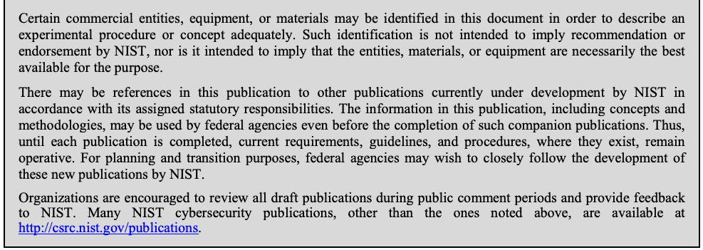

NIST Special Publication · PDF 原文抽出
SHA-3 Derived Functions: cSHAKE, KMAC, TupleHash, and ParallelHash
SHA-3派生関数：cSHAKE、KMAC、TupleHash、ParallelHash
NIST SP 800-185（SHA-3 Derived Functions: cSHAKE, KMAC, TupleHash, and ParallelHash）の英文と日本語訳を段落ごとに並べた閲覧用ページです。FIPS 202由来のcSHAKE、KMAC、TupleHash、ParallelHashを定義し、128ビットおよび256ビットのセキュリティ強度に対応する仕様を示します。 翻訳は有志による非公式のもので、NIST および米国商務省が作成・承認・推奨したものではありません。要件の確認にはNIST の正式版 PDFを参照してください。
NIST Special Publication 800-185
NIST特別刊行物800-185
SHA-3 Derived Functions:
SHA-3派生関数：
cSHAKE, KMAC, TupleHash and ParallelHash
cSHAKE、KMAC、TupleHash、ParallelHash
John Kelsey Shu-jen Chang Ray Perlner
John Kelsey、Shu-jen Chang、Ray Perlner
This publication is available free of charge from: https://doi.org/10.6028/NIST.SP.800-185
本刊行物は次のURLから無料で入手できます：https://doi.org/10.6028/NIST.SP.800-185
C O M P U T E R S E C U R I T Y
コンピューターセキュリティ
［NIST のロゴ。公的な標章のため、この非公式サイトには掲載していない。原本 PDF を参照。］
NIST Special Publication 800-185
NIST特別刊行物800-185
SHA-3 Derived Functions:
SHA-3派生関数：
cSHAKE, KMAC, TupleHash and ParallelHash
cSHAKE、KMAC、TupleHash、ParallelHash
John Kelsey Shu-jen Chang Ray Perlner
John Kelsey、Shu-jen Chang、Ray Perlner
Computer Security Division Information Technology Laboratory
コンピューターセキュリティ部門、情報技術研究所
This publication is available free of charge from: https://doi.org/10.6028/NIST.SP.800-185
本刊行物は次のURLから無料で入手できます：https://doi.org/10.6028/NIST.SP.800-185
December 2016
2016年12月
U.S. Department of Commerce Penny Pritzker, Secretary
米国商務省 長官 ペニー・プリツカー
National Institute of Standards and Technology
米国国立標準技術研究所（NIST）
Willie May, Under Secretary of Commerce for Standards and Technology and Director
ウィリー・メイ、標準・技術担当商務次官兼所長
Authority
権限
This publication has been developed by NIST in accordance with its statutory responsibilities under the Federal Information Security Modernization Act (FISMA) of 2014, 44 U.S.C. § 3551 et seq., Public Law (P.L.) 113-283. NIST is responsible for developing information security standards and guidelines, including minimum requirements for federal information systems, but such standards and guidelines shall not apply to national security systems without the express approval of appropriate federal officials exercising policy authority over such systems. This guideline is consistent with the requirements of the Office of Management and Budget (OMB) Circular A-130.
本刊行物は、2014年連邦情報セキュリティ近代化法（FISMA）、合衆国法典第44編第3551条以下、および公法113-283に基づく法的責任に従ってNISTが作成したものである。NISTは、連邦情報システムの最低要件を含む情報セキュリティ標準およびガイドラインを策定する責任を負う。ただし、適切な政策権限を有する連邦当局者の明示的な承認がない限り、これらの標準およびガイドラインを国家安全保障システムに適用してはならない。本ガイドラインは、行政管理予算局（OMB）通達A-130の要件に沿っている。
Nothing in this publication should be taken to contradict the standards and guidelines made mandatory and binding on federal agencies by the Secretary of Commerce under statutory authority. Nor should these guidelines be interpreted as altering or superseding the existing authorities of the Secretary of Commerce, Director of the OMB, or any other federal official. This publication may be used by nongovernmental organizations on a voluntary basis and is not subject to copyright in the United States. Attribution would, however, be appreciated by NIST.
本刊行物のいかなる記述も、法的権限に基づき商務長官が連邦機関に義務付け、拘束力を持たせた標準およびガイドラインに反するものと解釈してはならない。また、本ガイドラインを、商務長官、OMB長官、その他の連邦当局者が有する既存の権限を変更または無効にするものと解釈してはならない。本刊行物は非政府組織が任意に利用でき、米国内では著作権の対象ではない。ただし、NISTへの出典表示を歓迎する。
National Institute of Standards and Technology Special Publication 800-185 Natl. Inst. Stand. Technol. Spec. Publ. 800-185, 32 pages (December 2016) CODEN: NSPUE2
National Institute of Standards and Technology Special Publication 800-185 Natl. Inst. Stand. Technol. Spec. Publ. 800-185, 32ページ（2016年12月） CODEN: NSPUE2
This publication is available free of charge from: https://doi.org/10.6028/NIST.SP.800-185
本刊行物は次のURLから無料で入手できます：https://doi.org/10.6028/NIST.SP.800-185
Certain commercial entities, equipment, or materials may be identified in this document in order to describe an experimental procedure or concept adequately. Such identification is not intended to imply recommendation or endorsement by NIST, nor is it intended to imply that the entities, materials, or equipment are necessarily the best available for the purpose.
原本PDFの抜粋画像

実験手順または概念を適切に説明するため、この文書では特定の商業組織、装置、または材料を示すことがある。そのような記載は、NISTによる推奨または推薦を意味するものではなく、また当該組織、材料、または装置が目的に最適であることを意味するものでもない。
There may be references in this publication to other publications currently under development by NIST in accordance with its assigned statutory responsibilities. The information in this publication, including concepts and methodologies, may be used by federal agencies even before the completion of such companion publications. Thus, until each publication is completed, current requirements, guidelines, and procedures, where they exist, remain operative. For planning and transition purposes, federal agencies may wish to closely follow the development of these new publications by NIST.
本刊行物では、割り当てられた法定責務に従って現在NISTが策定中の他の刊行物を参照することがある。関連する刊行物が完成する前であっても、連邦機関は本刊行物に記載された情報（概念および方法論を含む）を利用してよい。したがって、各刊行物が完成するまでは、現行の要件、ガイドライン、および手順が存在する場合、それらは引き続き有効である。計画および移行のため、連邦機関はNISTによるこれらの新しい刊行物の策定状況を注意深く確認すべきである。
Organizations are encouraged to review all draft publications during public comment periods and provide feedback to NIST. Many NIST cybersecurity publications, other than the ones noted above, are available at http://csrc.nist.gov/publications.
組織は、意見募集期間中にすべてのドラフト刊行物を確認し、NISTに意見を提出することが推奨される。上記で挙げたものを除き、NISTの多くのサイバーセキュリティ刊行物は http://csrc.nist.gov/publications から入手できる。
Comments on this publication may be submitted to:
本刊行物への意見は、次の宛先に提出できます：
National Institute of Standards and Technology Attn: Computer Security Division, Information Technology Laboratory 100 Bureau Drive (Mail Stop 8930) Gaithersburg, MD 20899-8930 Email: SP800-185@nist.gov
National Institute of Standards and Technology Attn: Computer Security Division, Information Technology Laboratory 100 Bureau Drive (Mail Stop 8930) Gaithersburg, MD 20899-8930 Email: SP800-185@nist.gov
All comments are subject to release under the Freedom of Information Act (FOIA).
すべての意見は、情報公開法（FOIA）に基づく公開の対象となる。
Reports on Computer Systems Technology
コンピューターシステム技術に関する報告書
The Information Technology Laboratory (ITL) at the National Institute of Standards and Technology (NIST) promotes the U.S. economy and public welfare by providing technical leadership for the Nation’s measurement and standards infrastructure. ITL develops tests, test methods, reference data, proof of concept implementations, and technical analyses to advance the development and productive use of information technology. ITL’s responsibilities include the development of management, administrative, technical, and physical standards and guidelines for the cost-effective security and privacy of other than national security-related information in federal information systems. The Special Publication 800-series reports on ITL’s research, guidelines, and outreach efforts in information system security, and its collaborative activities with industry, government, and academic organizations.
米国国立標準技術研究所（NIST）の情報技術研究所（ITL）は、米国の測定・標準基盤に技術的なリーダーシップを発揮し、米国経済と公共の福祉を促進している。ITLは、情報技術の発展と有効活用を進めるため、試験、試験方法、参照データ、概念実証の実装、および技術分析を行う。ITLの責務には、国家安全保障に関係しない連邦情報システムにおける情報のセキュリティとプライバシーを費用対効果よく確保するための管理上、運用上、技術上および物理的な標準・ガイドラインの策定が含まれる。特別刊行物800シリーズは、情報システムセキュリティに関するITLの研究、ガイドライン、普及活動、ならびに産業界、政府、学術機関との協力活動を報告する。
Abstract
概要
This Recommendation specifies four types of SHA-3-derived functions: cSHAKE, KMAC, TupleHash, and ParallelHash, each defined for a 128- and 256-bit security strength. cSHAKE is a customizable variant of the SHAKE function, as defined in Federal Information Processing Standard (FIPS) 202. KMAC (for KECCAK Message Authentication Code) is a variable-length message authentication code algorithm based on KECCAK; it can also be used as a pseudorandom function. TupleHash is a variable-length hash function designed to hash tuples of input strings without trivial collisions. ParallelHash is a variable-length hash function that can hash very long messages in parallel.
本勧告は、SHA-3派生関数として、cSHAKE、KMAC、TupleHash、ParallelHashの4種類を規定する。それぞれ128ビットおよび256ビットのセキュリティ強度について定義されている。cSHAKEは、連邦情報処理標準（FIPS）202で定義されるSHAKE関数をカスタマイズ可能にしたものである。KMAC（KECCAKメッセージ認証コード）は、KECCAKに基づく可変長メッセージ認証コードアルゴリズムであり、疑似乱数関数としても使用できる。TupleHashは、入力文字列のタプルを単純な衝突が起きないようにハッシュ化するために設計された可変長ハッシュ関数である。ParallelHashは、非常に長いメッセージを並列にハッシュ化できる可変長ハッシュ関数である。
Keywords
キーワード
authentication; cryptography; cSHAKE; customizable SHAKE function; hash function; information security; integrity; KECCAK; KMAC; message authentication code; parallel hashing; ParallelHash; PRF; pseudorandom function; SHA-3; SHAKE; tuple hashing; TupleHash.
認証、暗号技術、cSHAKE、カスタマイズ可能なSHAKE関数、ハッシュ関数、情報セキュリティ、完全性、KECCAK、KMAC、メッセージ認証コード、並列ハッシュ化、ParallelHash、PRF、疑似乱数関数、SHA-3、SHAKE、タプルハッシュ化、TupleHash。
Acknowledgements
謝辞
The authors thank the KECCAK team members: Guido Bertoni, Joan Daemen, Michaël Peeters, and Gilles Van Assche, for their feedback. The authors also thank their colleagues for reviewing drafts of this document and contributing to its development.
著者は、フィードバックを寄せてくださったKECCAKチームのGuido Bertoni、Joan Daemen、Michaël Peeters、Gilles Van Assche各氏に感謝する。また、本書の草稿を査読し、作成に協力した同僚にも感謝する。
Table of Contents
目次
1 Introduction — 1
1 はじめに — 1
2 Glossary — 3
2 用語集 — 3
2.1 Terms and Acronyms — 3
2.1 用語と略語 — 3
2.2 Basic Operations — 4
2.2 基本演算 — 4
2.3 Other Internal Functions — 4
2.3 その他の内部関数 — 4
2.3.1 Integer to Byte String Encoding — 5
2.3.1 整数からバイト列への符号化 — 5
2.3.2 String Encoding — 5
2.3.2 文字列の符号化 — 5
2.3.3 Padding — 6
2.3.3 パディング — 6
2.3.4 Substrings — 6
2.3.4 部分文字列 — 6
3 cSHAKE — 7
3 cSHAKE — 7
3.1 Overview — 7
3.1 概要 — 7
3.2 Parameters — 7
3.2 パラメーター — 7
3.3 Definition — 8
3.3 定義 — 8
3.4 Using the Function-Name Input — 8
3.4 関数名入力の使用 — 8
3.5 Using the Customization String — 9
3.5 カスタマイズ文字列の使用 — 9
4 KMAC — 10
4 KMAC — 10
4.1 Overview — 10
4.1 概要 — 10
4.2 Parameters — 10
4.2 パラメーター — 10
4.3 Definition — 10
4.3 定義 — 10
4.3.1 KMAC with Arbitrary-Length Output — 11
4.3.1 任意長出力のKMAC — 11
5 TupleHash — 12
5 TupleHash — 12
5.1 Overview — 12
5.1 概要 — 12
5.2 Parameters — 12
5.2 パラメーター — 12
5.3 Definition — 12
5.3 定義 — 12
5.3.1 TupleHash with Arbitrary-Length Output — 13
5.3.1 任意長出力のTupleHash — 13
6 ParallelHash — 14
6 ParallelHash — 14
6.1 Overview — 14
6.1 概要 — 14
6.2 Parameters — 14
6.2 パラメーター — 14
6.3 Definition — 14
6.3 定義 — 14
6.3.1 ParallelHash with Arbitrary-Length Output — 15
6.3.1 任意長出力のParallelHash — 15
7 Implementation Considerations — 17
7 実装上の考慮事項 — 17
7.1 Precomputation — 17
7.1 事前計算 — 17
7.2 Limited Implementations — 17
7.2 制限された実装 — 17
7.3 Exploiting Parallelism in ParallelHash — 17
7.3 ParallelHashにおける並列処理の活用 — 17
8 Security Considerations — 19
8 セキュリティ上の考慮事項 — 19
8.1 Claimed Security Strength — 19
8.1 主張されるセキュリティ強度 — 19
8.2 Security Properties for the Function-Name and Customization Strings — 19
8.2 関数名およびカスタマイズ文字列のセキュリティ特性 — 19
8.2.1 Equivalent Security to SHAKE for Any Legal N and S — 19
8.2.1 許容される任意のNおよびSに対するSHAKEと同等のセキュリティ — 19
8.2.2 Different N and S Give Unrelated Outputs — 19
8.2.2 異なるNおよびSは相互に無関係な出力を生成 — 19
8.3 Collisions and Preimages — 20
8.3 衝突と原像 — 20
8.4 Guidance for Using KMAC Securely — 20
8.4 KMACを安全に使用するための指針 — 20
8.4.1 KMAC Key Length — 20
8.4.1 KMACの鍵長 — 20
8.4.2 KMAC Output Length — 20
8.4.2 KMACの出力長 — 20
List of Appendices
付録一覧
Appendix A— KMAC, TupleHash, and ParallelHash in Terms of KECCAK[c] — 22
付録A— KECCAK[c]による KMAC、TupleHash、ParallelHash — 22
Appendix B— Hashing into a Range (Informative) — 25
付録B — 範囲内へのハッシュ化（参考情報） — 25
Appendix C— References — 26
付録C — 参考文献 — 26
List of Tables
表一覧
Table 1: Equivalent security settings for KMAC and previously standardized MAC algorithms — 21
表1：KMACと従来標準化されたMACアルゴリズムの同等のセキュリティ設定 — 21
1 Introduction
1 はじめに
Federal Information Processing Standard (FIPS) 202, SHA-3 Standard: Permutation-Based Hash and Extendable-Output Functions [1], defines four fixed-length hash functions (SHA3-224, SHA3-256, SHA3-384, and SHA3-512), and two eXtendable Output Functions (XOFs), SHAKE128 and SHAKE256. These SHAKE (Secure Hash Algorithm KECCAK) functions are a new kind of cryptographic primitive; unlike earlier hash functions, they are named for their expected security strength.
連邦情報処理標準（FIPS）202「SHA-3標準：置換ベースのハッシュ関数および拡張可能出力関数」[1]は、固定長ハッシュ関数4種類（SHA3-224、SHA3-256、SHA3-384、SHA3-512）と、拡張可能出力関数（XOF）2種類（SHAKE128、SHAKE256）を定義している。これらのSHAKE（Secure Hash Algorithm KECCAK）関数は新しい種類の暗号プリミティブである。従来のハッシュ関数とは異なり、想定されるセキュリティ強度にちなんで命名されている。
FIPS 202 also supports a flexible scheme for domain separation between different functions derived from KECCAK—the algorithm [2] on which the SHA-3 Standard is based. Domain separation ensures that different named functions (such as SHA3-512 and SHAKE128) will be unrelated. cSHAKE—the customizable version of SHAKE—extends this scheme to allow users to customize their use of the function, as described below.
FIPS 202は、SHA-3標準の基礎となるアルゴリズム[2]であるKECCAKから派生する異なる関数間の柔軟なドメイン分離方式もサポートしている。ドメイン分離により、SHA3-512やSHAKE128のような異なる名前の関数が相互に無関係であることが保証される。SHAKEのカスタマイズ可能版であるcSHAKEは、以下で説明するように、この方式を拡張し、利用者が関数の使い方をカスタマイズできるようにする。
Customization is analogous to strong typing in a programming language; such customization makes it extremely unlikely that computing one function with two different customization strings will yield the same answer. Thus, two cSHAKE computations with different customization strings (for example, a key fingerprint and an email signature) are unrelated: knowing one of these results will give an attacker no information about the other.
カスタマイズは、プログラミング言語における強い型付けに似ている。このようなカスタマイズにより、異なるカスタマイズ文字列を使って計算した関数が同じ結果を返す可能性は極めて低くなる。したがって、異なるカスタマイズ文字列（例えば鍵のフィンガープリントと電子メール署名）を用いた2つのcSHAKE計算は相互に無関係である。一方の結果を知っても、攻撃者はもう一方について何の情報も得られない。
This Recommendation defines two cSHAKE variants, cSHAKE128 and cSHAKE256, in Sec. 3, based on the KECCAK[\(c\)] sponge function [3] defined in FIPS 202. It then defines three additional SHA-3-derived functions, in Secs. 4 through 6, that provide new functionality not directly available from the more basic functions. They are:
本勧告は、FIPS 202で定義されるKECCAK[\(c\)]スポンジ関数[3]に基づき、3節でcSHAKE128およびcSHAKE256の2つの変種を定義する。続いて4節から6節で、より基本的な関数では直接提供されない機能を実現する、SHA-3派生関数をさらに3種類定義する。これらは次のとおりである。
•KMAC1281 and KMAC256, providing pseudorandom functions (PRFs) and keyed hash functions with variable-length outputs;
•KMAC128¹およびKMAC256：疑似乱数関数（PRF）と、可変長出力を持つ鍵付きハッシュ関数を提供する。
•TupleHash128 and TupleHash256, providing functions that hash tuples of input strings unambiguously2; and
•TupleHash128およびTupleHash256：入力文字列のタプルを曖昧さなくハッシュ化する関数を提供する²。
•ParallelHash128 and ParallelHash256, providing efficient hash functions to hash long messages more quickly by taking advantage of parallelism in the processors.
•ParallelHash128およびParallelHash256：プロセッサーの並列処理を活用し、長いメッセージをより高速にハッシュ化する効率的な関数を提供する。
All four functions defined in this Recommendation—cSHAKE, KMAC, TupleHash, and ParallelHash—have these properties in common:
本勧告で定義する4つの関数（cSHAKE、KMAC、TupleHash、ParallelHash）には、次の共通特性がある。
•They are all derived from the functions specified in FIPS 202.
•いずれもFIPS 202で規定された関数から派生している。
•All the functions except cSHAKE are defined in terms of cSHAKE.
•cSHAKEを除くすべての関数は、cSHAKEに基づいて定義されている。
•All support user-defined customization strings.
•いずれも利用者定義のカスタマイズ文字列をサポートする。
•All support variable-length outputs of any bit length. KMAC, TupleHash, and ParallelHash have the additional property that any change in the requested output length completely changes the function. Even with identical inputs otherwise, any of these functions, when called with different requested output lengths, will, in general, yield unrelated outputs.
•いずれも任意のビット長の可変長出力をサポートする。KMAC、TupleHash、ParallelHashには、要求する出力長を変更すると関数の結果が完全に変わるという追加特性がある。他の入力が同一であっても、これらの関数を異なる出力長で呼び出すと、一般に相互に無関係な出力が得られる。
•All support two security strengths: 128 and 256 bits.
•いずれも2種類のセキュリティ強度（128ビットおよび256ビット）をサポートする。
These functions are detailed in the specific sections below. In addition, a method is specified in Appendix B to facilitate using these functions to produce output that is almost uniformly distributed on the integers \(\{0, 1, 2, \ldots, R-1\}\) for any positive integer \(R\).
これらの関数の詳細は、以下の各節で説明する。さらに付録Bでは、整数\(\{0, 1, 2, \ldots, R-1\}\)上でほぼ一様に分布する出力をこれらの関数で生成する方法を、任意の正整数\(R\)について規定する。
2 Glossary
2 用語集
In this document, bits are indicated in the Courier New font. Bytes are typically written as two-digit hexadecimal numbers from the ASCII characters 0 through 9 and A through F, preceded by the prefix “0x”. In binary representation, bytes are written with the low-order bit first, while in hexadecimal representation, bytes are written with the high-order digit first. E.g., \(\mathrm{0x01} = \mathtt{10000000}\) and \(\mathrm{0x80} = \mathtt{00000001}\). These bit-ordering conventions follow the conventions established in Sec. B.1 of FIPS 202. Character strings appear in this document in double-quotes. Character strings are interpreted as bit strings whose length is a multiple of 8 bits, consisting of a 0 bit, followed by the 7-bit ASCII representation of each successive character.
本書では、ビットをCourier Newフォントで示す。バイトは通常、2桁の16進数で記述する。数字にはASCII文字の0～9およびA～Fを使い、その前に接頭辞「0x」を付ける。2進表記ではバイトを下位ビットから記述し、16進表記では上位桁から記述する。例えば、\(\mathrm{0x01} = \mathtt{10000000}\)および\(\mathrm{0x80} = \mathtt{00000001}\)である。これらのビット順序規約は、FIPS 202のB.1節に定められた規約に従う。文字列は本書では二重引用符で囲んで表記する。文字列は長さが8ビットの倍数のビット列として解釈し、0ビットに続けて各文字の7ビットASCII表現を並べたものである。
2.1 Terms and Acronyms
2.1 用語と略語
Bit — A binary digit: \(\mathtt{0}\) or \(\mathtt{1}\).
Bit（ビット） — 2進数字：\(\mathtt{0}\) または \(\mathtt{1}\)。
CMAC — Cipher-based Message Authentication Code.
CMAC — 暗号ベースのメッセージ認証コード（Cipher-based Message Authentication Code）。
cSHAKE — The customizable SHAKE function.
cSHAKE — カスタマイズ可能なSHAKE関数。
Domain Separation — For a function, a partitioning of the inputs to different application domains so that no input is assigned to more than one domain.
Domain Separation（ドメイン分離） — 関数について、入力を異なる適用ドメインに分割し、どの入力も2つ以上のドメインに割り当てられないようにすること。
eXtendable-Output Function (XOF) — A function on bit strings in which the output can be extended to any desired length.
eXtendable-Output Function (XOF) — 出力を任意の所望の長さに拡張できる、ビット列上の関数。
FIPS — Federal Information Processing Standard.
FIPS — 連邦情報処理標準（Federal Information Processing Standard）。
Hash Function — A function on bit strings in which the length of the output is fixed. The output often serves as a condensed representation of the input.
Hash Function（ハッシュ関数） — ビット列上の関数であって、出力の長さが固定されているもの。出力は、入力を圧縮した表現として用いられることが多い。
HMAC — Keyed-Hash Message Authentication Code.
HMAC — 鍵付きハッシュメッセージ認証コード（Keyed-Hash Message Authentication Code）。
KECCAK — The family of all sponge functions with a KECCAK-\(f\) permutation as the underlying function and multi-rate padding as the padding rule. KECCAK was originally specified in [2], and standardized in FIPS 202.
KECCAK — KECCAK-f置換を基礎関数とし、多率パディングをパディング規則とする、すべてのスポンジ関数の族。KECCAKは当初[2]で規定され、FIPS 202で標準化された。
KMAC — KECCAK Message Authentication Code.
KMAC — KECCAKメッセージ認証コード（KECCAK Message Authentication Code）。
MAC — Message Authentication Code.
MAC — メッセージ認証コード（Message Authentication Code）。
NIST — National Institute of Standards and Technology.
NIST — 米国国立標準技術研究所（National Institute of Standards and Technology）。
PRF — See Pseudorandom Function.
PRF — Pseudorandom Function（疑似乱数関数）を参照。
Pseudorandom Function (PRF) — A function that can be used to generate output from a random seed such that the output is computationally indistinguishable from truly random output.
Pseudorandom Function（PRF、疑似乱数関数） — ランダムなシードから出力を生成するために使用できる関数であって、その出力が真にランダムな出力と計算量的に区別できないもの。
Rate — In the sponge construction, the number of input bits processed per invocation of the underlying function.
Rate（レート） — スポンジ構成において、基礎関数の1回の呼び出しで処理される入力ビット数。
SHA-3 — Secure Hash Algorithm-3.
SHA-3 — Secure Hash Algorithm-3。
Sponge Construction — The method originally specified in [3] for defining a function from the following: 1) an underlying function on bit strings of a fixed length, 2) a padding rule, and 3) a rate. Both the input and the output of the resulting function are bit strings that can be arbitrarily long.
Sponge Construction（スポンジ構成） — [3]で当初規定された、次の3つから関数を定義する方法。1) 固定長のビット列上の基礎関数、2) パディング規則、3) レート。得られる関数の入力と出力はいずれも、任意の長さのビット列とすることができる。
Sponge Function — A function that is defined according to the sponge construction, possibly specialized to a fixed output length.
Sponge Function（スポンジ関数） — スポンジ構成に従って定義される関数。出力長を固定したものに特化される場合もある。
String — A sequence of bits.
String（ビット列） — ビットの列。
XOF — See eXtendable-Output Function.
XOF — eXtendable-Output Function（拡張可能出力関数）を参照。
2.2 Basic Operations
2.2 基本演算
\(\lceil x \rceil\)
\(\lceil x \rceil\)
For a real number \(x\), \(\lceil x \rceil\) is the least integer that is not strictly less than \(x\). For example, \(\lceil 3.2 \rceil = 4\), \(\lceil -3.2 \rceil = -3\), and \(\lceil 6 \rceil = 6\).
実数 \(x\) に対して、\(\lceil x \rceil\) は \(x\) を下回らない最小の整数である。例えば、\(\lceil 3.2 \rceil = 4\)、\(\lceil -3.2 \rceil = -3\)、\(\lceil 6 \rceil = 6\) である。
\(\mathtt{0}^s\)
\(\mathtt{0}^s\)
For a positive integer \(s\), \(\mathtt{0}^s\) is the string that consists of \(s\) consecutive 0 bits.
正整数 \(s\) に対して、\(\mathtt{0}^s\) は \(s\) 個連続する0ビットから成る文字列である。
\(a \bmod b\)
\(a \bmod b\)
The modulo operation of integers \(a\) and \(b\). “\(a \bmod b\)” returns the remainder after dividing \(a\) by \(b\).
整数 \(a\) および \(b\) に対する剰余演算である。「\(a \bmod b\)」は、\(a\) を \(b\) で割った余りを返す。
\(\mathrm{enc}_8(i)\)
\(\mathrm{enc}_8(i)\)
For an integer \(i\) ranging from 0 to 255, \(\mathrm{enc}_8(i)\) is the byte encoding of \(i\), with bit 0 being the low-order bit of the byte.
0から255までの範囲の整数 \(i\) について、\(\mathrm{enc}_8(i)\) は \(i\) のバイト符号化である。このバイトでは、ビット0が最下位ビットである。
\(\operatorname{len}(X)\)
\(\operatorname{len}(X)\)
For a bit string \(X\), \(\operatorname{len}(X)\) is the length of \(X\) in bits.
ビット列 \(X\) について、\(\operatorname{len}(X)\) は \(X\) のビット長である。
\(X \parallel Y\)
\(X \parallel Y\)
For strings \(X\) and \(Y\), \(X \parallel Y\) is the concatenation of \(X\) and \(Y\). For example, \(\mathtt{11001} \parallel \mathtt{010} = \mathtt{11001010}\).
文字列 \(X\) および \(Y\) について、\(X \parallel Y\) は \(X\) と \(Y\) を連結したものである。例えば、\(\mathtt{11001} \parallel \mathtt{010} = \mathtt{11001010}\) である。
2.3 Other Internal Functions
2.3 その他の内部関数
This section describes the string encoding, padding and substring functions used in the definition of the SHA-3-derived functions.
本節では、SHA-3派生関数の定義で使用する文字列符号化、パディング、および部分文字列関数について説明する。
2.3.1 Integer to Byte String Encoding
2.3.1 整数からバイト列への符号化
Two internal functions, \(\mathit{left\_encode}\) and \(\mathit{right\_encode}\), are defined to encode integers as byte strings. Both functions can encode integers up to an extremely large maximum, \(2^{2040}-1\).
整数をバイト列として符号化するため、2つの内部関数 \(\mathit{left\_encode}\) および \(\mathit{right\_encode}\) を定義する。どちらの関数も、非常に大きな最大値である \(2^{2040}-1\) までの整数を符号化できる。
\(\mathrm{left\_encode}(x)\) encodes the integer \(x\) as a byte string in a way that can be unambiguously parsed from the beginning of the string by inserting the length of the byte string before the byte string representation of \(x\).
\(\mathrm{left\_encode}(x)\) は、整数 \(x\) をバイト列として符号化する。その際、文字列の先頭から曖昧さなく解析できるように、バイト列の長さを \(x\) のバイト列表現の前に挿入する。
\(\mathrm{right\_encode}(x)\) encodes the integer \(x\) as a byte string in a way that can be unambiguously parsed from the end of the string by inserting the length of the byte string after the byte string representation of \(x\).
\(\mathrm{right\_encode}(x)\) は、整数 \(x\) をバイト列として符号化する。その際、文字列の末尾から曖昧さなく解析できるように、バイト列の長さを \(x\) のバイト列表現の後に挿入する。
Using the function \(\mathit{enc}_8()\) to encode the individual bytes, these two functions are defined as follows:
各バイトの符号化に関数 \(\mathit{enc}_8()\) を用い、これら2つの関数を次のように定義する：
\(\mathbf{right\_encode}(\boldsymbol{x})\):
Validity Conditions: \(0 \le x < 2^{2040}\)
\(\mathbf{right\_encode}(\boldsymbol{x})\)：
妥当性条件： \(0 \le x < 2^{2040}\)
1. Let \(n\) be the smallest positive integer for which \(2^{8n} > x\).
1. \(n\) を、\(2^{8n} > x\) となる最小の正整数とする。
2. Let \(x_1, x_2, \ldots, x_n\) be the base-256 encoding of \(x\) satisfying:
2. \(x_1, x_2, \ldots, x_n\) を、次の条件を満たす \(x\) の256進符号化とする：
3. Let \(O_i = \mathrm{enc}_8(x_i)\), for \(i = 1\) to \(n\).
3. \(O_i = \mathrm{enc}_8(x_i)\) とする。ただし \(i = 1\) から \(n\) まで。
4. Let \(O_{n+1} = \mathrm{enc}_8(n)\).
4. \(O_{n+1} = \mathrm{enc}_8(n)\) とする。
5. Return \(O = O_1 \parallel O_2 \parallel \ldots \parallel O_n \parallel O_{n+1}\).
5. \(O = O_1 \parallel O_2 \parallel \ldots \parallel O_n \parallel O_{n+1}\) を返す。
\(\mathbf{left\_encode}(\boldsymbol{x})\):
Validity Conditions: \(0 \le x < 2^{2040}\)
\(\mathbf{left\_encode}(\boldsymbol{x})\)：
妥当性条件： \(0 \le x < 2^{2040}\)
1. Let \(n\) be the smallest positive integer for which \(2^{8n} > x\).
1. \(n\)を、\(2^{8n} > x\)となる最小の正整数とする。
2. Let \(x_1, x_2, \ldots, x_n\) be the base-256 encoding of \(x\) satisfying:
2. \(x_1, x_2, \ldots, x_n\)を、次を満たす\(x\)の256進符号化とする：
3. Let \(O_i = \mathrm{enc}_8(x_i)\), for \(i = 1\) to \(n\).
3. \(O_i = \mathrm{enc}_8(x_i)\)とする。ただし\(i = 1\)から\(n\)まで。
4. Let \(O_0 = \mathrm{enc}_8(n)\).
4. \(O_0 = \mathrm{enc}_8(n)\)とする。
5. Return \(O = O_0 \parallel O_1 \parallel \ldots \parallel O_{n-1} \parallel O_n\).
5. \(O = O_0 \parallel O_1 \parallel \ldots \parallel O_{n-1} \parallel O_n\)を返す。
As an example, right_encode(0) will yield 00000000 10000000, and left_encode(0) will yield 10000000 00000000.
例として、right_encode(0)は00000000 10000000を、left_encode(0)は10000000 00000000を返す。
2.3.2 String Encoding
2.3.2 文字列の符号化
The \(\mathrm{encode\_string}\) function is used to encode bit strings in a way that may be parsed unambiguously from the beginning of the string, \(S\). The function is defined as follows:
\(\mathrm{encode\_string}\)関数は、ビット列を、その文字列\(S\)の先頭から曖昧さなく解析できる形式で符号化するために使用する。関数を次のように定義する：
\(\mathbf{encode\_string}(\boldsymbol{S})\):
Validity Conditions: \(0 \le \operatorname{len}(S) < 2^{2040}\)
\(\mathbf{encode\_string}(\boldsymbol{S})\)：
妥当性条件： \(0 \le \operatorname{len}(S) < 2^{2040}\)
1. Return \(\mathrm{left\_encode}(\operatorname{len}(S)) \parallel S\).
1. \(\mathrm{left\_encode}(\operatorname{len}(S)) \parallel S\)を返す。
As an example, \(\mathrm{encode\_string}(S)\) where \(S\) is the empty string "" will yield 10000000 00000000.
例として、\(\mathrm{encode\_string}(S)\)は、\(S\)が空文字列""の場合、10000000 00000000を出力する。
Note that if the bit string \(S\) is not byte-oriented (i.e., \(\operatorname{len}(S)\) is not a multiple of 8), the bit string returned from \(\mathrm{encode\_string}(S)\) is also not byte-oriented. However, if \(\operatorname{len}(S)\) is a multiple of 8, then the length of the output of \(\mathrm{encode\_string}(S)\) will also be a multiple of 8.
ビット列\(S\)がバイト単位ではない（すなわち\(\operatorname{len}(S)\)が8の倍数ではない）場合、\(\mathrm{encode\_string}(S)\)が返すビット列もバイト単位ではない。一方、\(\operatorname{len}(S)\)が8の倍数であれば、\(\mathrm{encode\_string}(S)\)の出力長も8の倍数になる。
2.3.3 Padding
2.3.3 パディング
The \(\mathrm{bytepad}(X, w)\) function prepends an encoding of the integer \(w\) to an input string \(X\), then pads the result with zeros until it is a byte string whose length in bytes is a multiple of \(w\). In general, \(\mathrm{bytepad}\) is intended to be used on encoded strings—the byte string \(\mathrm{bytepad}(\mathrm{encode\_string}(S), w)\) can be parsed unambiguously from its beginning, whereas \(\mathrm{bytepad}\) does not provide unambiguous padding for all input strings.
\(\mathrm{bytepad}(X, w)\)関数は、整数\(w\)の符号化を入力文字列\(X\)の前に付加し、その結果を、バイト単位の長さが\(w\)の倍数であるバイト列になるまでゼロでパディングする。一般に\(\mathrm{bytepad}\)は、符号化済み文字列に対して使用することを意図している。バイト列\(\mathrm{bytepad}(\mathrm{encode\_string}(S), w)\)は先頭から曖昧さなく解析できるが、\(\mathrm{bytepad}\)はすべての入力文字列について曖昧さのないパディングを提供するわけではない。
The definition of \(\mathrm{bytepad}()\) is as follows:
\(\mathrm{bytepad}()\)を次のように定義する：
\(\mathbf{bytepad}(\boldsymbol{X}, \boldsymbol{w})\):
Validity Conditions: \(w > 0\)
\(\mathbf{bytepad}(\boldsymbol{X}, \boldsymbol{w})\)：
妥当性条件： \(w > 0\)
1. \(z = \mathrm{left\_encode}(w) \parallel X\).
1. \(z = \mathrm{left\_encode}(w) \parallel X\)。
2. while \(\operatorname{len}(z) \bmod 8 \ne 0\):
\(z = z \parallel \mathtt{0}\)
2. \(\operatorname{len}(z) \bmod 8 \ne 0\)である間：
\(z = z \parallel \mathtt{0}\)
3. while \((\operatorname{len}(z)/8) \bmod w \ne 0\):
\(\mathrm{z} = \mathrm{z} \parallel \mathtt{00000000}\)
3. \((\operatorname{len}(z)/8) \bmod w \ne 0\)である間：
\(\mathrm{z} = \mathrm{z} \parallel \mathtt{00000000}\)
4. return \(z\).
4. \(z\)を返す。
2.3.4 Substrings
2.3.4 部分文字列
Let parameters \(a\) and \(b\) be non-negative integers that denote a specific position in a bit string \(X\). Informally, the \(\mathrm{substring}(X, a, b)\) function returns a substring from the bit string \(X\) containing the values at bit positions \(a, a+1, \ldots, b-1\), inclusive. More precisely, the \(\mathrm{substring}\) function operates as defined below. Note that all bit positions in the input and output strings are indexed from zero. Thus, the first bit in a string is in position 0, and the last bit in an \(n\)-bit string is in position \(n-1\).
パラメーター\(a\)および\(b\)を、ビット列\(X\)内の特定位置を表す非負整数とする。直感的には、\(\mathrm{substring}(X, a, b)\)関数は、ビット列\(X\)から、ビット位置\(a, a+1, \ldots, b-1\)（両端を含む）の値から成る部分文字列を返す。より正確には、\(\mathrm{substring}\)関数は以下の定義のとおりに動作する。入力文字列と出力文字列のすべてのビット位置は0から数える。したがって、文字列の最初のビットは位置0にあり、\(n\)ビット文字列の最後のビットは位置\(n-1\)にある。
\(\mathbf{substring}(\boldsymbol{X}, \boldsymbol{a}, \boldsymbol{b})\):
\(\mathbf{substring}(\boldsymbol{X}, \boldsymbol{a}, \boldsymbol{b})\)：
1. If \(a \ge b\) or \(a \ge \operatorname{len}(X)\):
return the empty string.
1. \(a \ge b\)または\(a \ge \operatorname{len}(X)\)の場合：
空文字列を返す。
2. Else if \(b \le \operatorname{len}(X)\):
return the bits of \(X\) from position \(a\) to position \(b-1\), inclusive.
2. それ以外で\(b \le \operatorname{len}(X)\)の場合：
\(X\)のビットのうち、位置\(a\)から位置\(b-1\)まで（両端を含む）を返す。
3. Else:
return the bits of \(X\) from position \(a\) to position \(\operatorname{len}(X)-1\), inclusive.
3. それ以外の場合：
\(X\)のビットのうち、位置\(a\)から位置\(\operatorname{len}(X)-1\)まで（両端を含む）を返す。
3 cSHAKE
3 cSHAKE
3.1 Overview
3.1 概要
The two variants of cSHAKE—\(\mathrm{cSHAKE128}\) and \(\mathrm{cSHAKE256}\)—are defined in terms of the SHAKE and \(\mathrm{KECCAK}[c]\) functions specified in FIPS 202. \(\mathrm{cSHAKE128}\) provides a 128-bit security strength, while \(\mathrm{cSHAKE256}\) provides a 256-bit security strength.
cSHAKEの2つの変種である\(\mathrm{cSHAKE128}\)および\(\mathrm{cSHAKE256}\)は、FIPS 202で規定されたSHAKE関数および\(\mathrm{KECCAK}[c]\)関数に基づいて定義されている。\(\mathrm{cSHAKE128}\)は128ビットのセキュリティ強度を、\(\mathrm{cSHAKE256}\)は256ビットのセキュリティ強度を提供する。
3.2 Parameters
3.2 パラメーター
Both cSHAKE functions take four parameters:
cSHAKE関数はどちらも4つのパラメーターを取ります：
• \(X\) is the main input bit string. It may be of any length3, including zero.
• \(X\)は主入力ビット列である。長さは、0を含め任意でよい3。
• \(L\) is an integer representing the requested output length4 in bits.
• \(L\)は、要求する出力長4をビット単位で表す整数である。
• \(N\) is a function-name bit string, used by NIST to define functions based on cSHAKE. When no function other than cSHAKE is desired, \(N\) is set to the empty string.
• \(N\)は関数名を表すビット列で、NISTがcSHAKEに基づく関数を定義するために使用する。cSHAKE以外の関数を必要としない場合、\(N\)は空文字列に設定する。
• \(S\) is a customization bit string. The user selects this string to define a variant of the function. When no customization is desired, \(S\) is set to the empty string5.
• \(S\)はカスタマイズ用のビット列である。利用者はこの文字列を選択して、関数の変種を定義する。カスタマイズを必要としない場合、\(S\)は空文字列に設定する5。
An implementation of cSHAKE may reasonably support only input strings and output lengths that are whole bytes; if so, a fractional-byte input string or a request for an output length that is not a multiple of 8 would result in an error.
cSHAKEの実装では、入力文字列と出力長をバイト単位の整数に限ってサポートすることも合理的である。その場合、端数バイトの入力文字列、または8の倍数でない出力長の要求はエラーとなる。
When \(N\) and \(S\) are both empty strings, \(\mathrm{cSHAKE}(X, L, N, S)\) is equivalent to SHAKE as defined in FIPS 202. Thus,
\(N\)および\(S\)がどちらも空文字列の場合、\(\mathrm{cSHAKE}(X, L, N, S)\)はFIPS 202で定義されるSHAKEと等価である。したがって、
cSHAKE is designed so that for any two instances:
cSHAKEは、任意の2つのインスタンスについて次の性質が成り立つよう設計されている：
cSHAKE(X1, L1, N1, S1) and cSHAKE(X1, L1, N2, S2), unless N1 = N2 and S1 = S2, the two instances produce unrelated outputs. Note that this includes the case where N1 and S1 are empty strings. That is, cSHAKE with any customization is domain-separated from the ordinary SHAKE function specified in FIPS 202.
cSHAKE(X₁, L₁, N₁, S₁)およびcSHAKE(X₁, L₁, N₂, S₂)は、N₁ = N₂かつS₁ = S₂でない限り、相互に無関係な出力を生成する。これは、N₁とS₁が空文字列の場合も含む。つまり、カスタマイズを行うcSHAKEは、FIPS 202で規定された通常のSHAKEからドメイン分離される。
3 When a string is specified to be “of any length” in this document, a theoretical limit (e.g., \(2^{2040}-1\) bits) may apply. This limit is imposed by the integer encoding schemes \(\mathrm{left\_encode}\) and \(\mathrm{right\_encode}\), defined in Sec. 2.3.1. Beyond this limit, the string cannot be encoded. In the remainder of this document, absurdly large limits like \(2^{2040}-1\) bits will often be treated interchangeably with no limit at all.
3 本書で文字列が「任意の長さ」と指定されている場合でも、理論上の上限（例えば\(2^{2040}-1\)ビット）が適用されることがある。この上限は、2.3.1節で定義する整数符号化方式\(\mathrm{left\_encode}\)および\(\mathrm{right\_encode}\)によって課される。この上限を超える文字列は符号化できない。本書の以降の部分では、\(2^{2040}-1\)ビットのような途方もなく大きな上限を、上限なしと同じものとして扱うことが多い。
4 When the requested output length is zero, i.e., \(L=0\), cSHAKE, KMAC, TupleHash, and ParallelHash return the empty string as the output.
4 要求された出力長が0、すなわち\(L=0\)の場合、cSHAKE、KMAC、TupleHash、ParallelHashは空文字列を出力として返す。
5 In computing languages that support default values for parameters, a natural way to implement this function would be to set the default values for \(N\) and \(S\) to empty strings.
5 パラメーターの既定値をサポートするプログラミング言語では、この関数を実装する自然な方法は、\(N\)と\(S\)の既定値を空文字列に設定することである。
3.3 Definition
3.3 定義
cSHAKE is defined in terms of SHAKE or \(\mathrm{KECCAK}[c]\), as follows: it either returns the result of a call to SHAKE (if \(N\) and \(S\) are both empty strings), or returns the result of a call to \(\mathrm{KECCAK}(c)\) with a padded encoding of \(N\) and \(S\) concatenated to the input string \(X\).
cSHAKEは、SHAKEまたは\(\mathrm{KECCAK}[c]\)に基づいて、次のように定義される。\(N\)と\(S\)がともに空文字列の場合はSHAKEの呼出し結果を返し、それ以外の場合は、\(\mathrm{KECCAK}(c)\)の呼出し結果を返す。この呼出しでは、\(N\)と\(S\)をパディングして符号化したものを入力文字列\(X\)に連結する。
\(\mathrm{cSHAKE128}(X, L, N, S)\):
Validity Conditions: \(\mathit{len}(N) < 2^{2040}\) and \(\mathit{len}(S) < 2^{2040}\)
\(\mathrm{cSHAKE128}(X, L, N, S)\):
妥当性条件： \(\mathit{len}(N) < 2^{2040}\)かつ\(\mathit{len}(S) < 2^{2040}\)
1. If \(N = \text{""}\) and \(S = \text{""}\):
return \(\mathrm{SHAKE128}(X, L)\);
1. \(N = \text{""}\)かつ\(S = \text{""}\)の場合：
\(\mathrm{SHAKE128}(X, L)\)を返す。
2. Else:
return \(\mathrm{KECCAK}[256](\mathrm{bytepad}(\mathrm{encode\_string}(N) \parallel \mathrm{encode\_string}(S), 168) \parallel X \parallel \mathtt{00}, L)\).
2. それ以外の場合：
\(\mathrm{KECCAK}[256](\mathrm{bytepad}(\mathrm{encode\_string}(N) \parallel \mathrm{encode\_string}(S), 168) \parallel X \parallel \mathtt{00}, L)\)を返す。
\(\mathrm{cSHAKE256}(X, L, N, S)\):
Validity Conditions: \(\mathit{len}(N) < 2^{2040}\) and \(\mathit{len}(S) < 2^{2040}\)
\(\mathrm{cSHAKE256}(X, L, N, S)\):
妥当性条件： \(\mathit{len}(N) < 2^{2040}\)かつ\(\mathit{len}(S) < 2^{2040}\)
1. If \(N = \text{""}\) and \(S = \text{""}\):
return \(\mathrm{SHAKE256}(X, L)\);
1. \(N = \text{""}\)かつ\(S = \text{""}\)の場合：
\(\mathrm{SHAKE256}(X, L)\)を返す。
2. Else:
return \(\mathrm{KECCAK}[512](\mathrm{bytepad}(\mathrm{encode\_string}(N) \parallel \mathrm{encode\_string}(S), 136) \parallel X \parallel \mathtt{00}, L)\).
2. それ以外の場合：
\(\mathrm{KECCAK}[512](\mathrm{bytepad}(\mathrm{encode\_string}(N) \parallel \mathrm{encode\_string}(S), 136) \parallel X \parallel \mathtt{00}, L)\)を返す。
Note that the numbers 168 and 136 are rates (in bytes) of the \(\mathrm{KECCAK}[256]\) and \(\mathrm{KECCAK}[512]\) sponge functions, respectively; the characters \(\mathtt{00}\) in the Courier New font in these definitions specify two zero bits.
数値168および136は、それぞれ\(\mathrm{KECCAK}[256]\)および\(\mathrm{KECCAK}[512]\)スポンジ関数のレート（バイト単位）である。また、これらの定義において\(\mathtt{00}\)という文字をCourier Newフォントで表記したものは、2個のゼロビットを表す。
3.4 Using the Function-Name Input
3.4 関数名入力の使用
The cSHAKE function includes an input string that may be used to provide a function name (\(N\)). This is intended for use by NIST in defining SHA-3-derived functions, and should only be set to values defined by NIST6. This parameter provides a level of domain separation by function name. Users of cSHAKE should not make up their own names—that kind of customization is the purpose of the customization string \(S\), to be discussed in Sec. 3.5. Nonstandard values of \(N\) could cause interoperability problems with future NIST-defined functions.
cSHAKE関数には、関数名（\(N\)）を指定するために使用できる入力文字列が含まれる。これはNISTがSHA-3派生関数を定義する際に使うためのものであり、NISTが定義した値だけを設定すべきである6。このパラメーターは、関数名によるドメイン分離を実現する。cSHAKEの利用者は独自の名前を作るべきではない。その種のカスタマイズは、3.5節で説明するカスタマイズ文字列\(S\)の目的である。\(N\)に標準外の値を指定すると、将来NISTが定義する関数との相互運用性に問題が生じる可能性がある。
6 NIST will always make the function name \(N\) a byte-oriented value.
6 NISTは、関数名\(N\)を常にバイト単位の値にする。
3.5 Using the Customization String
3.5 カスタマイズ文字列の使用
The cSHAKE function also includes an input string (\(S\)) to allow users to customize their use of the function. For example, someone using cSHAKE128 to compute a key fingerprint (the hash value for a public key) might use:
cSHAKE関数には、利用者が関数の使い方をカスタマイズできるよう、入力文字列（\(S\)）も含まれる。例えば、鍵のフィンガープリント（公開鍵のハッシュ値）を計算するためにcSHAKE128を使う者は、次のようにするだろう：
\(\mathrm{cSHAKE128}(\mathit{public\_key}, 256, \text{""}, \text{"key fingerprint"})\),
\(\mathrm{cSHAKE128}(\mathit{public\_key}, 256, \text{""}, \text{"key fingerprint"})\),
where "key fingerprint" is a customization string \(S\).
ここで、"key fingerprint"はカスタマイズ文字列\(S\)である。
Later, the same user might decide to customize a different cSHAKE computation for signing an email:
後に、同じ利用者は電子メール署名用の別のcSHAKE計算をカスタマイズすることがある：
\(\mathrm{cSHAKE128}(\mathit{email\_contents}, 256, \text{""}, \text{"email signature"})\),
\(\mathrm{cSHAKE128}(\mathit{email\_contents}, 256, \text{""}, \text{"email signature"})\),
where "email signature" is the customization string \(S\).
ここで、"email signature"はカスタマイズ文字列\(S\)である。
The customization string is intended to avoid a collision between these two cSHAKE values—it will be very difficult for an attacker to somehow force one computation (the email signature) to yield the same result as the other computation (the key fingerprint) if different values of \(S\) are used.
カスタマイズ文字列は、これら2つのcSHAKE値の衝突を避けるためのものである。異なる\(S\)の値を使えば、一方の計算（電子メール署名）がもう一方の計算（鍵のフィンガープリント）と同じ結果になるよう攻撃者が何らかの方法で強制することは、極めて困難である。
The customization string may be of any length less than \(2^{2040}\); however, implementations may restrict the length of \(S\) that they will accept.
カスタマイズ文字列は、\(2^{2040}\)未満の任意の長さであってよい。ただし、実装は受け入れる\(S\)の長さを制限してもかまわない。
4 KMAC
4 KMAC
4.1 Overview
4.1 概要
The KECCAK Message Authentication Code (KMAC) algorithm is a PRF and keyed hash function based on KECCAK. It provides variable-length output, and unlike SHAKE and cSHAKE, altering the requested output length generates a new, unrelated output. KMAC has two variants, KMAC128 and KMAC256, built from cSHAKE128 and cSHAKE256, respectively. The two variants differ somewhat in their technical security properties. Nonetheless, for most applications, both variants can support any security strength up to 256 bits of security, provided that a long enough key is used, as discussed in Sec. 8.4.1.
KECCAKメッセージ認証コード（KMAC）アルゴリズムは、KECCAKに基づくPRFおよび鍵付きハッシュ関数である。可変長出力を提供し、SHAKEやcSHAKEとは異なり、要求する出力長を変更すると、新たに相互に無関係な出力が生成される。KMACにはKMAC128とKMAC256の2つの変種があり、それぞれcSHAKE128とcSHAKE256から構成される。2つの変種は技術的なセキュリティ特性が多少異なる。それでも、8.4.1節で説明するとおり、十分に長い鍵を使用すれば、ほとんどの用途でどちらの変種も最大256ビットまでの任意のセキュリティ強度に対応できる。
4.2 Parameters
4.2 パラメーター
Both KMAC functions take the following parameters:
KMAC関数はどちらも、次のパラメーターを取ります：
• \(K\) is a key bit string of any length7, including zero.
• \(K\)は、0を含む任意の長さ7の鍵ビット列である。
• \(X\) is the main input bit string. It may be of any length, including zero.
• \(X\)は主入力ビット列である。長さは0を含め、任意である。
• \(L\) is an integer representing the requested output length8 in bits.
• \(L\)は、要求する出力長8をビット単位で表す整数である。
• \(S\) is an optional customization bit string of any length, including zero. If no customization is desired, \(S\) is set to the empty string.
• \(S\)は任意指定のカスタマイズ用ビット列であり、長さは0を含めて任意である。カスタマイズしない場合、\(S\)は空文字列に設定する。
4.3 Definition
4.3 定義
KMAC concatenates a padded version of the key \(K\) with the input \(X\) and an encoding of the requested output length \(L\). The result is then passed to cSHAKE, along with the requested output length \(L\), the name \(N\) ="KMAC" = 11010010 10110010 10000010 110000109, and the optional customization string \(S\).
KMACは、鍵 \(K\) をパディングしたものを、入力 \(X\) および要求出力長 \(L\) の符号化と連結する。その結果をcSHAKEに渡す。その際、要求出力長 \(L\)、名前 \(N\) ="KMAC" = 11010010 10110010 10000010 110000109、および任意のカスタマイズ文字列 \(S\) も併せて渡す。
\(\mathrm{KMAC128}(K, X, L, S)\):
\(\mathrm{KMAC128}(K, X, L, S)\)：
Validity Conditions: \(\mathit{len}(K) < 2^{2040}\) and \(0 \le L < 2^{2040}\) and \(\mathit{len}(S) < 2^{2040}\)
妥当性条件： \(\mathit{len}(K) < 2^{2040}\) かつ \(0 \le L < 2^{2040}\) かつ \(\mathit{len}(S) < 2^{2040}\)
1. \(\mathit{newX} = \mathrm{bytepad}(\mathrm{encode\_string}(K), 168) \parallel X \parallel \mathrm{right\_encode}(L)\).
1. \(\mathit{newX} = \mathrm{bytepad}(\mathrm{encode\_string}(K), 168) \parallel X \parallel \mathrm{right\_encode}(L)\)。
2. return \(\mathrm{cSHAKE128}(\mathit{newX}, L, \text{“KMAC”}, S)\).
2. \(\mathrm{cSHAKE128}(\mathit{newX}, L, \text{“KMAC”}, S)\) を返す。
7 Approved uses of KMAC require the length of \(K\) to be at least the required security strength, as discussed in Sec. 8.4.1.
7 KMACの承認された使用では、8.4.1節で説明するとおり、\(K\) の長さが必要なセキュリティ強度以上であることが求められる。
8 Note that there is a limit of \(2^{2040}-1\) bits of output from this function unless the function is used as a XOF, as discussed in Sec. 4.3.1.
8 本関数からの出力は \(2^{2040}-1\) ビットまでである。ただし、4.3.1節で説明するとおり、関数をXOFとして使用する場合を除く。
\(\mathrm{KMAC256}(K, X, L, S)\):
\(\mathrm{KMAC256}(K, X, L, S)\)：
Validity Conditions: \(\mathit{len}(K) < 2^{2040}\) and \(0 \le L < 2^{2040}\) and \(\mathit{len}(S) < 2^{2040}\)
妥当性条件： \(\mathit{len}(K) < 2^{2040}\) かつ \(0 \le L < 2^{2040}\) かつ \(\mathit{len}(S) < 2^{2040}\)
1. \(\mathit{newX} = \mathrm{bytepad}(\mathrm{encode\_string}(K), 136) \parallel X \parallel \mathrm{right\_encode}(L)\).
1. \(\mathit{newX} = \mathrm{bytepad}(\mathrm{encode\_string}(K), 136) \parallel X \parallel \mathrm{right\_encode}(L)\)。
2. return \(\mathrm{cSHAKE256}(\mathit{newX}, L, \text{“KMAC”}, S)\).
2. \(\mathrm{cSHAKE256}(\mathit{newX}, L, \text{“KMAC”}, S)\) を返す。
Note that the numbers 168 and 136 are rates (in bytes) of the \(\mathrm{KECCAK}[256]\) and \(\mathrm{KECCAK}[512]\) sponge functions, respectively.
数値168および136は、それぞれ \(\mathrm{KECCAK}[256]\) および \(\mathrm{KECCAK}[512]\) スポンジ関数のレート（バイト単位）である。
4.3.1 KMAC with Arbitrary-Length Output
4.3.1 任意長出力のKMAC
Some applications of KMAC may not know the number of output bits they will need until after the outputs begin to be produced. For these applications, KMAC can also be used as a XOF (i.e., the output can be extended to any desired length), which mimics the behavior of cSHAKE.
用途によっては、出力の生成が始まるまで必要な出力ビット数が分からない場合がある。そのような用途では、KMACをXOFとしても使用できる（すなわち、出力を任意の長さまで拡張できる）。この動作はcSHAKEに似ている。
When used as a XOF, KMAC is computed by setting the encoded output length to 0, as shown in \(\mathrm{right\_encode}(0)\) in Step 1 of the \(\mathrm{KMACXOF128}(K, X, L, S)\) and \(\mathrm{KMACXOF256}(K, X, L, S)\) pseudocodes below. Conceptually, KMAC in XOF mode produces an infinite-length output string, and the caller simply uses as many bits of the output string as are needed. Truncated outputs of KMAC in XOF mode can be computed by the function \(\mathrm{KMACXOF128}(K, X, L, S)\) or \(\mathrm{KMACXOF256}(K, X, L, S)\) given by the following pseudocode:
XOFとして使用する場合、KMACは符号化された出力長を0に設定して計算する。これは、ステップ1の \(\mathrm{right\_encode}(0)\) に示すとおりであり、このステップは以下の \(\mathrm{KMACXOF128}(K, X, L, S)\) および \(\mathrm{KMACXOF256}(K, X, L, S)\) の擬似コードにある。概念上、XOFモードのKMACは無限長の出力文字列を生成し、呼出し側は出力文字列のうち必要なビット数だけを使用する。XOFモードのKMACの出力を切り詰めたものは、関数 \(\mathrm{KMACXOF128}(K, X, L, S)\) または \(\mathrm{KMACXOF256}(K, X, L, S)\) で計算でき、これらは以下の擬似コードで与えられる：
\(\mathrm{KMACXOF128}(K, X, L, S)\):
\(\mathrm{KMACXOF128}(K, X, L, S)\)：
Validity Conditions: \(\mathit{len}(K) < 2^{2040}\) and \(0 \le L\) and \(\mathit{len}(S) < 2^{2040}\)
妥当性条件： \(\mathit{len}(K) < 2^{2040}\) かつ \(0 \le L\) かつ \(\mathit{len}(S) < 2^{2040}\)
1. \(\mathit{newX} = \mathrm{bytepad}(\mathrm{encode\_string}(K), 168) \parallel X \parallel \mathrm{right\_encode}(0)\).
1. \(\mathit{newX} = \mathrm{bytepad}(\mathrm{encode\_string}(K), 168) \parallel X \parallel \mathrm{right\_encode}(0)\)。
2. return \(\mathrm{cSHAKE128}(\mathit{newX}, L, \text{“KMAC”}, S)\).
2. \(\mathrm{cSHAKE128}(\mathit{newX}, L, \text{“KMAC”}, S)\) を返す。
\(\mathrm{KMACXOF256}(K, X, L, S)\):
\(\mathrm{KMACXOF256}(K, X, L, S)\)：
Validity Conditions: \(\mathit{len}(K) < 2^{2040}\) and \(0 \le L\) and \(\mathit{len}(S) < 2^{2040}\)
妥当性条件： \(\mathit{len}(K) < 2^{2040}\) かつ \(0 \le L\) かつ \(\mathit{len}(S) < 2^{2040}\)
1. \(\mathit{newX} = \mathrm{bytepad}(\mathrm{encode\_string}(K), 136) \parallel X \parallel \mathrm{right\_encode}(0)\).
1. \(\mathit{newX} = \mathrm{bytepad}(\mathrm{encode\_string}(K), 136) \parallel X \parallel \mathrm{right\_encode}(0)\)。
2. return \(\mathrm{cSHAKE256}(\mathit{newX}, L, \text{“KMAC”}, S)\).
2. \(\mathrm{cSHAKE256}(\mathit{newX}, L, \text{“KMAC”}, S)\) を返す。
5 TupleHash
5 TupleHash
5.1 Overview
5.1 概要
TupleHash is a SHA-3-derived hash function with variable-length output that is designed to simply hash a tuple of input strings, any or all of which may be empty strings, in an unambiguous way. Such a tuple may consist of any number of strings, including zero, and is represented as a sequence of strings or variables in parentheses like (“a”, “b”, “c”,...,“z”) in this document.
TupleHashは、空文字列を含む任意の入力文字列のタプルを曖昧さなく単純にハッシュ化するために設計された、SHA-3派生の可変長出力ハッシュ関数である。タプルは0個を含む任意個数の文字列から成り、本書では（"a"、"b"、"c"、…、"z"）のように、括弧内に文字列または変数を並べた列として表す。
TupleHash is designed to provide a generic, misuse-resistant way to combine a sequence of strings for hashing such that, for example, a TupleHash computed on the tuple ("abc" ,"d") will produce a different hash value than a TupleHash computed on the tuple ("ab","cd"), even though all the remaining input parameters are kept the same, and the two resulting concatenated strings, without string encoding, are identical.
TupleHashは、文字列列をハッシュ化のために組み合わせる、汎用的で誤用に強い方法を提供するよう設計されている。例えば、他の入力パラメーターがすべて同じであっても、タプル（"abc"、"d"）に対するTupleHashの値は、タプル（"ab"、"cd"）に対する値と異なる。文字列符号化を行わずに連結した文字列は同一であるが、結果のハッシュ値は異なる。
TupleHash supports two security strengths: 128 bits and 256 bits. Changing any input to the function, including the requested output length, will almost certainly change the final output.
TupleHashは、128ビットおよび256ビットの2種類のセキュリティ強度をサポートする。要求出力長を含め、関数への入力を変更すると、最終出力もほぼ確実に変化する。
5.2 Parameters
5.2 パラメーター
TupleHash takes the following parameters:
TupleHashは次のパラメーターを取ります：
• \(X\) is a tuple of zero or more bit strings, any or all of which may be an empty string.
• \(X\) は0個以上のビット列から成るタプルであり、その一部またはすべてが空文字列でもかまわない。
• \(L\) is an integer representing the requested output length in bits.
• \(L\) は要求する出力長をビット単位で表す整数である。
• \(S\) is an optional customization bit string of any length, including zero. If no customization is desired, \(S\) is set to the empty string.
• \(S\) は任意の長さ（0を含む）のカスタマイズ用ビット列であり、省略できる。カスタマイズしない場合、\(S\) は空文字列に設定する。
5.3 Definition
5.3 定義
TupleHash encodes the sequence of input strings in an unambiguous way, then encodes the requested output length at the end of the string, and passes the result into cSHAKE, along with the function name (\(N\)) of “TupleHash” = 00101010 10101110 00001110 00110110 10100110 00010010 10000110 11001110 00010110, and the optional customization string \(S\).
TupleHashは、入力文字列の列を曖昧さなく符号化し、次に要求出力長を文字列の末尾に符号化して、その結果をcSHAKEへ渡す。その際、関数名（\(N\)）である “TupleHash” = 00101010 10101110 00001110 00110110 10100110 00010010 10000110 11001110 00010110、および任意のカスタマイズ文字列 \(S\) も併せて渡す。
If \(X\) is a tuple of \(n\) bit strings, let \(X[i]\) be the \(i\)th bit string, numbering from 0. The TupleHash functions are defined in pseudocode as follows:
\(X\)が\(n\)個のビット列から成るタプルである場合、\(X[i]\)を0から数えた\(i\)番目のビット列とする。TupleHash関数を次の擬似コードで定義する：
\(\mathrm{TupleHash128}(X, L, S)\):
Validity Conditions: \(0 \le L < 2^{2040}\) and \(\operatorname{len}(S) < 2^{2040}\)
\(\mathrm{TupleHash128}(X, L, S)\)：
妥当性条件：\(0 \le L < 2^{2040}\)かつ\(\operatorname{len}(S) < 2^{2040}\)
1. \(z\) = "".
1. \(z\) = ""。
2. \(n\) = the number of input strings in the tuple \(X\).
2. \(n\) = タプル\(X\)に含まれる入力文字列の個数。
3. for \(i = 1\) to \(n\):
\(z = z \parallel \mathrm{encode\_string}(X[i])\).
3. \(i = 1\)から\(n\)まで：
\(z = z \parallel \mathrm{encode\_string}(X[i])\)。
4. \(\mathit{newX} = z \parallel \mathrm{right\_encode}(L)\).
4. \(\mathit{newX} = z \parallel \mathrm{right\_encode}(L)\)。
5. return \(\mathrm{cSHAKE128}(\mathit{newX}, L, \text{“TupleHash”}, S)\).
5. \(\mathrm{cSHAKE128}(\mathit{newX}, L, \text{“TupleHash”}, S)\)を返す。
\(\mathrm{TupleHash256}(X, L, S)\):
Validity Conditions: \(0 \le L < 2^{2040}\) and \(\operatorname{len}(S) < 2^{2040}\)
\(\mathrm{TupleHash256}(X, L, S)\)：
妥当性条件：\(0 \le L < 2^{2040}\)かつ\(\operatorname{len}(S) < 2^{2040}\)
1. \(z\) = "".
1. \(z\) = ""。
2. \(n\) = the number of input strings in the tuple \(X\).
2. \(n\) = タプル\(X\)に含まれる入力文字列の個数。
3. for \(i = 1\) to \(n\):
\(z = z \parallel \mathrm{encode\_string}(X[i])\).
3. \(i = 1\)から\(n\)まで：
\(z = z \parallel \mathrm{encode\_string}(X[i])\)。
4. \(\mathit{newX} = z \parallel \mathrm{right\_encode}(L)\).
4. \(\mathit{newX} = z \parallel \mathrm{right\_encode}(L)\)。
5. return \(\mathrm{cSHAKE256}(\mathit{newX}, L, \text{“TupleHash”}, S)\).
5. \(\mathrm{cSHAKE256}(\mathit{newX}, L, \text{“TupleHash”}, S)\)を返す。
5.3.1 TupleHash with Arbitrary-Length Output
5.3.1 任意長出力のTupleHash
Some applications of TupleHash may not know the number of output bits they will need until after the outputs begin to be produced. For these applications, TupleHash can also be used as a XOF (i.e., the output can be extended to any desired length), which mimics the behavior of cSHAKE.
用途によっては、出力の生成が始まるまで必要な出力ビット数が分からない場合がある。そのような用途では、TupleHashをXOFとしても使用できる（すなわち、出力を任意の長さまで拡張できる）。この動作はcSHAKEに似ている。
When used as a XOF, TupleHash is computed by setting the encoded output length to 0, as shown in \(\mathrm{right\_encode}(0)\) in Step 1 of the \(\mathrm{TupleHashXOF128}(X, L, S)\) and \(\mathrm{TupleHashXOF256}(X, L, S)\) pseudocodes below. Conceptually, TupleHash in XOF mode produces an infinite-length output string, and the caller simply uses as many bits of the output string as are needed. Truncated outputs of TupleHash in XOF mode can be computed by the function \(\mathrm{TupleHashXOF128}(X, L, S)\) or \(\mathrm{TupleHashXOF256}(X, L, S)\) given by the following pseudocode:
XOFとして使用する場合、TupleHashは符号化された出力長を0に設定して計算する。これは、\(\mathrm{right\_encode}(0)\)として、以下の\(\mathrm{TupleHashXOF128}(X, L, S)\)および\(\mathrm{TupleHashXOF256}(X, L, S)\)の擬似コードのステップ1に示されている。概念上、XOFモードのTupleHashは無限長の出力文字列を生成し、呼出し側は必要なビット数だけを使用する。XOFモードのTupleHash出力を切り詰めたものは、以下の擬似コードで定義する関数\(\mathrm{TupleHashXOF128}(X, L, S)\)または\(\mathrm{TupleHashXOF256}(X, L, S)\)で計算できる：
\(\mathrm{TupleHashXOF128}(X, L, S)\):
Validity Conditions: \(0 \le L\) and \(\operatorname{len}(S) < 2^{2040}\)
\(\mathrm{TupleHashXOF128}(X, L, S)\)：
妥当性条件：\(0 \le L\)かつ\(\operatorname{len}(S) < 2^{2040}\)
1. \(z\) = "".
1. \(z\) = ""。
2. \(n\) = the number of input strings in the tuple \(X\).
2. \(n\) = タプル\(X\)に含まれる入力文字列の個数。
3. for \(i = 1\) to \(n\):
\(z = z \parallel \mathrm{encode\_string}(X[i])\).
3. \(i = 1\)から\(n\)まで：
\(z = z \parallel \mathrm{encode\_string}(X[i])\)。
4. \(\mathit{newX} = z \parallel \mathrm{right\_encode}(0)\).
4. \(\mathit{newX} = z \parallel \mathrm{right\_encode}(0)\)。
5. return \(\mathrm{cSHAKE128}(\mathit{newX}, L, \text{“TupleHash”}, S)\).
5. \(\mathrm{cSHAKE128}(\mathit{newX}, L, \text{“TupleHash”}, S)\)を返す。
\(\mathrm{TupleHashXOF256}(X, L, S)\):
Validity Conditions: \(0 \le L\) and \(\operatorname{len}(S) < 2^{2040}\)
\(\mathrm{TupleHashXOF256}(X, L, S)\)：
妥当性条件：\(0 \le L\)かつ\(\operatorname{len}(S) < 2^{2040}\)
1. \(z\) = "".
1. \(z\) = ""。
2. \(n\) = the number of input strings in the tuple \(X\).
2. \(n\) = タプル\(X\)に含まれる入力文字列の個数。
3. for \(i = 1\) to \(n\):
\(z = z \parallel \mathrm{encode\_string}(X[i])\).
3. \(i = 1\)から\(n\)まで：
\(z = z \parallel \mathrm{encode\_string}(X[i])\)。
4. \(\mathit{newX} = z \parallel \mathrm{right\_encode}(0)\).
4. \(\mathit{newX} = z \parallel \mathrm{right\_encode}(0)\)。
5. return \(\mathrm{cSHAKE256}(\mathit{newX}, L, \text{“TupleHash”}, S)\).
5. \(\mathrm{cSHAKE256}(\mathit{newX}, L, \text{“TupleHash”}, S)\)を返す。
6 ParallelHash
6 ParallelHash
6.1 Overview
6.1 概要
The purpose of ParallelHash10 is to support the efficient hashing of very long strings, by taking advantage of the parallelism available in modern processors. ParallelHash supports the 128- and 256-bit security strengths, and also provides variable-length output. Changing any input parameter to ParallelHash, even the requested output length, will result in unrelated output. Like the other functions defined in this document, ParallelHash also supports user-selected customization strings.
ParallelHash¹⁰は、最新のプロセッサーで利用できる並列処理を活用し、非常に長い文字列を効率よくハッシュ化することを目的とする。ParallelHashは128ビットおよび256ビットのセキュリティ強度をサポートし、可変長出力も提供する。要求出力長を含むParallelHashの入力パラメーターを変更すると、相互に無関係な出力が生成される。本書で定義する他の関数と同様、ParallelHashも利用者が選択するカスタマイズ文字列をサポートする。
6.2 Parameters
6.2 パラメーター
ParallelHash takes the following parameters:
ParallelHashは次のパラメーターを取ります：
• \(X\) is the main input bit string. It may be of any length11, including zero.
• \(X\)は主入力ビット列である。長さは0を含め、任意である11。
• \(B\) is the block size in bytes for parallel hashing. It may be any integer such that \(0 < B < 2^{2040}\).
• \(B\)は並列ハッシュ化におけるブロックサイズ（バイト単位）である。\(0 < B < 2^{2040}\)を満たす任意の整数を指定できる。
• \(L\) is an integer representing the requested output length in bits.
• \(L\)は要求する出力長をビット単位で表す整数である。
• \(S\) is an optional customization bit string of any length, including zero. If no customization is desired, \(S\) is set to the empty string.
• \(S\)は任意の長さ（0を含む）のカスタマイズ用ビット列であり、省略できる。カスタマイズしない場合、\(S\)は空文字列に設定する。
6.3 Definition
6.3 定義
ParallelHash divides the input bit string \(X\) into a sequence of contiguous, non-overlapping blocks, each of length \(B\) bytes, and then computes the hash value for each block separately. Finally, these hash values are combined and passed to cSHAKE along with the function name (\(N\)) of "ParallelHash" = 00001010 10000110 01001110 10000110 00110110 00110110 10100110 00110110 00010010 10000110 11001110 00010110, the optional customization string \(S\), and some encoded integer values (as shown below in the pseudocode), to generate the final hash value of the function.
ParallelHashは入力ビット列\(X\)を、互いに連続し重複しない、各\(B\)バイト長のブロック列に分割し、各ブロックのハッシュ値を個別に計算する。最後に、これらのハッシュ値を結合し、関数名（\(N\)）である"ParallelHash" = 00001010 10000110 01001110 10000110 00110110 00110110 10100110 00110110 00010010 10000110 11001110 00010110、任意指定のカスタマイズ文字列\(S\)、およびいくつかの符号化済み整数値（以下の擬似コードを参照）とともにcSHAKEへ渡して、関数の最終ハッシュ値を生成する。
The ParallelHash functions are defined in pseudocode as follows:
ParallelHash関数を次の擬似コードで定義します：
\(\mathrm{ParallelHash128}(X, B, L, S)\):
Validity Conditions: \(0 < B < 2^{2040}\) and \(\lceil \mathit{len}(X)/B \rceil < 2^{2040}\) and \(0 \le L < 2^{2040}\) and \(\mathit{len}(S) < 2^{2040}\)
\(\mathrm{ParallelHash128}(X, B, L, S)\):
妥当性条件： \(0 < B < 2^{2040}\) かつ \(\lceil \mathit{len}(X)/B \rceil < 2^{2040}\) かつ \(0 \le L < 2^{2040}\) かつ \(\mathit{len}(S) < 2^{2040}\)
1. \(n = \lceil (\mathrm{len}(X)/8) / B \rceil\).
1. \(n = \lceil (\mathrm{len}(X)/8) / B \rceil\)。
11 Where \(\lceil \mathit{len}(X)/B \rceil < 2^{2040}\) and \(B\) is the block size in bytes as defined in Sec. 6.2. As specified in Footnote 2, NIST will treat such absurdly large limit as interchangeable with having no limit at all.
11 ここで \(\lceil \mathit{len}(X)/B \rceil < 2^{2040}\) であり、\(B\) は6.2節で定義するバイト単位のブロックサイズである。脚注2で示すとおり、NISTはこのような非常に大きな上限を、上限なしと同じものとして扱う。
2. \(z = \mathrm{left\_encode}(B)\).
2. \(z = \mathrm{left\_encode}(B)\)。
3. for \(i = 0\) to \(n-1\):
\(z = z \parallel \mathrm{cSHAKE128}(\mathrm{substring}(X, i*B*8, (i+1)*B*8), 256, \text{""}, \text{""})\).
3. \(i = 0\) から \(n-1\) まで：
\(z = z \parallel \mathrm{cSHAKE128}(\mathrm{substring}(X, i*B*8, (i+1)*B*8), 256, \text{""}, \text{""})\)。
4. \(z = z \parallel \mathrm{right\_encode}(n) \parallel \mathrm{right\_encode}(L)\).
4. \(z = z \parallel \mathrm{right\_encode}(n) \parallel \mathrm{right\_encode}(L)\)。
5. \(\mathit{newX} = z\).
5. \(\mathit{newX} = z\)。
6. return \(\mathrm{cSHAKE128}(\mathit{newX}, L, \text{“ParallelHash”}, S)\).
6. \(\mathrm{cSHAKE128}(\mathit{newX}, L, \text{“ParallelHash”}, S)\) を返す。
\(\mathrm{ParallelHash256}(X, B, L, S)\):
Validity Conditions: \(0 < B < 2^{2040}\) and \(\lceil \mathit{len}(X)/B \rceil < 2^{2040}\) and \(0 \le L < 2^{2040}\) and \(\mathit{len}(S) < 2^{2040}\)
\(\mathrm{ParallelHash256}(X, B, L, S)\):
妥当性条件： \(0 < B < 2^{2040}\) かつ \(\lceil \mathit{len}(X)/B \rceil < 2^{2040}\) かつ \(0 \le L < 2^{2040}\) かつ \(\mathit{len}(S) < 2^{2040}\)
1. \(n = \lceil (\mathrm{len}(X)/8) / B \rceil\).
1. \(n = \lceil (\mathrm{len}(X)/8) / B \rceil\)。
2. \(z = \mathrm{left\_encode}(B)\).
2. \(z = \mathrm{left\_encode}(B)\)。
3. for \(i = 0\) to \(n-1\):
\(z = z \parallel \mathrm{cSHAKE256}(\mathrm{substring}(X, i*B*8, (i+1)*B*8), 512, \text{""}, \text{""})\).
3. \(i = 0\) から \(n-1\) まで：
\(z = z \parallel \mathrm{cSHAKE256}(\mathrm{substring}(X, i*B*8, (i+1)*B*8), 512, \text{""}, \text{""})\)。
4. \(z = z \parallel \mathrm{right\_encode}(n) \parallel \mathrm{right\_encode}(L)\).
4. \(z = z \parallel \mathrm{right\_encode}(n) \parallel \mathrm{right\_encode}(L)\)。
5. \(\mathit{newX} = z\).
5. \(\mathit{newX} = z\)。
6. return \(\mathrm{cSHAKE256}(\mathit{newX}, L, \text{“ParallelHash”}, S)\).
6. \(\mathrm{cSHAKE256}(\mathit{newX}, L, \text{“ParallelHash”}, S)\) を返す。
6.3.1 ParallelHash with Arbitrary-Length Output
6.3.1 任意長出力のParallelHash
Some applications of ParallelHash may not know the number of output bits they will need until after the outputs begin to be produced. For these applications, ParallelHash can also be used as a XOF (i.e., the output can be extended to any desired length), which mimics the behavior of cSHAKE.
用途によっては、出力の生成が始まるまで必要な出力ビット数が分からない場合がある。そのような用途では、ParallelHashをXOFとしても使用できる（すなわち、出力を任意の長さまで拡張できる）。この動作はcSHAKEに似ている。
When used as a XOF, ParallelHash is computed by setting the encoded output length to 0, as shown in \(\mathrm{right\_encode}(0)\) in Step 1 of the \(\mathrm{ParallelHashXOF128}(X, B, L, S)\) and \(\mathrm{ParallelHashXOF256}(X, B, L, S)\) pseudocodes below. Conceptually, ParallelHash in XOF mode produces an infinite-length output string, and the caller simply uses as many bits of the output string as are needed. Truncated outputs of ParallelHash in XOF mode can be computed by the function \(\mathrm{ParallelHashXOF128}(X, B, L, S)\) or \(\mathrm{ParallelHashXOF256}(X, B, L, S)\) given by the following pseudocode:
XOFとして使用する場合、ParallelHashは符号化された出力長を0に設定して計算する。これは、以下の擬似コードのステップ1における \(\mathrm{right\_encode}(0)\) に示されている（対象は \(\mathrm{ParallelHashXOF128}(X, B, L, S)\) および \(\mathrm{ParallelHashXOF256}(X, B, L, S)\) の擬似コード）。概念上、XOFモードのParallelHashは無限長の出力文字列を生成し、呼出し側は出力文字列のうち必要なビット数だけを使用する。XOFモードのParallelHashの切り詰めた出力は、以下の擬似コードで与えられる関数 \(\mathrm{ParallelHashXOF128}(X, B, L, S)\) または \(\mathrm{ParallelHashXOF256}(X, B, L, S)\) で計算できる：
\(\mathrm{ParallelHashXOF128}(X, B, L, S)\):
Validity Conditions: \(0 < B < 2^{2040}\) and \(\lceil \mathit{len}(X)/B \rceil < 2^{2040}\) and \(0 \le L\) and \(\mathit{len}(S) < 2^{2040}\)
\(\mathrm{ParallelHashXOF128}(X, B, L, S)\):
妥当性条件： \(0 < B < 2^{2040}\) かつ \(\lceil \mathit{len}(X)/B \rceil < 2^{2040}\) かつ \(0 \le L\) かつ \(\mathit{len}(S) < 2^{2040}\)
1. \(n = \lceil (\mathrm{len}(X)/8) / B \rceil\).
1. \(n = \lceil (\mathrm{len}(X)/8) / B \rceil\)。
2. \(z = \mathrm{left\_encode}(B)\).
2. \(z = \mathrm{left\_encode}(B)\)。
3. for \(i = 0\) to \(n-1\):
\(z = z \parallel \mathrm{cSHAKE128}(\mathrm{substring}(X, i*B*8, (i+1)*B*8), 256, \text{""}, \text{""})\).
3. \(i = 0\) から \(n-1\) まで：
\(z = z \parallel \mathrm{cSHAKE128}(\mathrm{substring}(X, i*B*8, (i+1)*B*8), 256, \text{""}, \text{""})\)。
4. \(z = z \parallel \mathrm{right\_encode}(n) \parallel \mathrm{right\_encode}(0)\).
4. \(z = z \parallel \mathrm{right\_encode}(n) \parallel \mathrm{right\_encode}(0)\)。
5. \(\mathit{newX} = z\).
5. \(\mathit{newX} = z\)。
6. return \(\mathrm{cSHAKE128}(\mathit{newX}, L, \text{“ParallelHash”}, S)\).
6. \(\mathrm{cSHAKE128}(\mathit{newX}, L, \text{“ParallelHash”}, S)\) を返す。
\(\mathrm{ParallelHashXOF256}(X, B, L, S)\):
\(\mathrm{ParallelHashXOF256}(X, B, L, S)\):
Validity Conditions: \(0 < B < 2^{2040}\) and \(\lceil \mathit{len}(X)/B \rceil < 2^{2040}\) and \(0 \le L\) and \(\mathit{len}(S) < 2^{2040}\)
妥当性条件： \(0 < B < 2^{2040}\) かつ \(\lceil \mathit{len}(X)/B \rceil < 2^{2040}\) かつ \(0 \le L\) かつ \(\mathit{len}(S) < 2^{2040}\)
1. \(n = \lceil (\mathrm{len}(X)/8) / B \rceil\).
1. \(n = \lceil (\mathrm{len}(X)/8) / B \rceil\)。
2. \(z = \mathrm{left\_encode}(B)\).
2. \(z = \mathrm{left\_encode}(B)\)。
3. for \(i = 0\) to \(n-1\):
\(z = z \parallel \mathrm{cSHAKE256}(\mathrm{substring}(X, i*B*8, (i+1)*B*8), 512, \text{""}, \text{""})\).
3. \(i = 0\) から \(n-1\) まで：
\(z = z \parallel \mathrm{cSHAKE256}(\mathrm{substring}(X, i*B*8, (i+1)*B*8), 512, \text{""}, \text{""})\)。
4. \(z = z \parallel \mathrm{right\_encode}(n) \parallel \mathrm{right\_encode}(0)\).
4. \(z = z \parallel \mathrm{right\_encode}(n) \parallel \mathrm{right\_encode}(0)\)。
5. \(\mathit{newX} = z\).
5. \(\mathit{newX} = z\)。
6. return \(\mathrm{cSHAKE256}(\mathit{newX}, L, \text{“ParallelHash”}, S)\).
6. \(\mathrm{cSHAKE256}(\mathit{newX}, L, \text{“ParallelHash”}, S)\) を返す。
7 Implementation Considerations
7 実装上の考慮事項
7.1 Precomputation
7.1 事前計算
cSHAKE is defined so that all the calls to the underlying \(\mathrm{KECCAK}\text{-}f\) function [1] to accommodate the function name \(N\) and the customization string \(S\) will process an integer multiple of \(r\) bits, where \(r\) is the rate parameter. An implementation can precompute the result of processing this padded block of \(N\) and \(S\) with cSHAKE, and thus, will suffer no performance penalty when reusing the same choices of \(N\) and \(S\) in multiple cSHAKE executions. Since TupleHash and ParallelHash are defined in terms of cSHAKE, this same precomputation is available to implementations of those functions as well.
cSHAKEは、基礎となる\(\mathrm{KECCAK}\text{-}f\)関数[1]の呼出しのうち、関数名\(N\)およびカスタマイズ文字列\(S\)を処理するためのものがすべて、\(r\)ビットの整数倍を処理するよう定義されている。ここで\(r\)はレート・パラメーターである。実装では、この\(N\)と\(S\)をパディングしたブロックをcSHAKEで処理した結果を事前計算できる。そのため、同じ\(N\)と\(S\)の選択を複数回のcSHAKE実行で再利用しても、性能上のペナルティは生じない。TupleHashおよびParallelHashもcSHAKEに基づいて定義されているため、これらの関数の実装でも同じ事前計算を利用できる。
KMAC can precompute the result of processing \(N\) and \(S\), and the result of processing the key \(K\). Thus, KMAC128 using a fixed, precomputed customization string and key will process an input string as efficiently as SHAKE128.
KMACでは、\(N\)および\(S\)の処理結果と、鍵\(K\)の処理結果を事前計算できる。したがって、固定のカスタマイズ文字列と鍵を事前計算したKMAC128は、入力文字列をSHAKE128と同程度に効率よく処理できる。
7.2 Limited Implementations
7.2 制限された実装
The cSHAKE, KMAC, TupleHash, and ParallelHash functions are defined to accept a wide range of possible inputs (including unreasonably long inputs, and inputs involving fractional bytes), and to produce a wide range of possible output lengths. However, it is acceptable for a specific implementation to limit the possible inputs that it will process, and the allowed output lengths that it will produce.
cSHAKE、KMAC、TupleHash、ParallelHashの各関数は、幅広い入力（非常に長い入力や端数バイトを含む入力など）を受け入れ、幅広い出力長を生成するよう定義されている。ただし、特定の実装が処理可能な入力や生成可能な出力長を制限してもかまわない。
For example, it would be acceptable to limit an implementation of any of these functions to producing no more than 65536 bytes of output, or to producing only whole bytes of output, or to accepting only byte strings (never fractional bytes) as inputs. Additionally, implementations intended for only a specific, limited use may further restrict the sets of inputs they will process. For example, an implementation of TupleHash256 used only to process a 6-tuple of strings, and always using a customization string of "address tuple", would be acceptable.
例えば、これらの関数の実装を、出力が最大65,536バイトまで、出力がバイト単位の整数長のみ、または入力がバイト列のみ（端数バイトは不可）となるよう制限してもかまわない。用途を限定した実装では、処理する入力集合をさらに制限してもかまわない。例えば、6個の文字列のタプルだけを処理し、常にカスタマイズ文字列"address tuple"を使用するTupleHash256の実装は許容される。
If it is possible for an implementation of one of these functions to be given a set of inputs that it cannot process, then the implementation shall signal an error condition and refuse to produce an output.
これらの関数の実装に、処理できない入力の組合せが与えられる可能性がある場合、実装はエラー状態を通知し、出力の生成を拒否しなければならない。
7.3 Exploiting Parallelism in ParallelHash
7.3 ParallelHashにおける並列処理の活用
Specific implementations of ParallelHash are permitted to restrict their implementation to a small subset of the allowed values. For example, it would be acceptable for a particular implementation to only allow a single value of \(B\) if it were only expected to interoperate with another implementation that similarly restricted \(B\) to that same value.
ParallelHashの特定の実装では、許容される値のうち少数の範囲に実装対象を制限してもかまわない。例えば、特定の実装が、単一の値の\(B\)だけを許容しても差し支えない。ただし、それは同様に\(B\)を同じ値に制限した別の実装との相互運用だけを想定する場合である。
ParallelHash can be implemented in a straightforward and reasonably efficient way even when only sequential processing is available. However, a much faster implementation is possible when each of the individual blocks of the message can be handled in parallel. The choice of block size B can have a huge impact on the efficiency of ParallelHash in this case. ParallelHash is designed so that any machine that can apply parallel processing can, in principle, benefit from that parallel processing. For example, a machine that can hash four blocks in parallel and a machine that can hash 32 blocks in parallel can each benefit from all the parallel processing ability that is available.
逐次処理しか利用できない場合でも、ParallelHashは単純で十分効率的な方法で実装できる。ただし、メッセージの各ブロックを並列処理できれば、はるかに高速な実装が可能である。この場合、ブロックサイズBの選択がParallelHashの効率に大きく影響することがある。ParallelHashは、並列処理が可能なあらゆるマシンが、原理上、その並列処理能力を活用できるよう設計されている。例えば、4ブロックを並列にハッシュ化できるマシンも、32ブロックを並列にハッシュ化できるマシンも、それぞれ利用可能な並列処理能力をすべて活用できる。
8 Security Considerations
8 セキュリティ上の考慮事項
8.1 Claimed Security Strength
8.1 主張されるセキュリティ強度
cSHAKE, KMAC, TupleHash, and ParallelHash are all defined for two claimed security strengths: 128 bits and 256 bits.
cSHAKE、KMAC、TupleHash、ParallelHashは、128ビットおよび256ビットの2種類の主張されるセキュリティ強度について定義されている。
cSHAKE128, KMAC128, TupleHash128, and ParallelHash128 each provide a security strength of 128 bits. This means that, for a given output length \(L\), there is no generic attack on one of these functions requiring less than \(2^{128}\) work that does not also exist for any hash function with the same output length. Similarly, cSHAKE256, KMAC256, TupleHash256, and ParallelHash256 each provides a security strength of 256 bits against generic attacks.
cSHAKE128、KMAC128、TupleHash128、ParallelHash128はそれぞれ128ビットのセキュリティ強度を提供する。これは、出力長\(L\)が与えられたとき、これらの関数のいずれかに対する一般的な攻撃であって、\(2^{128}\)未満の計算量で済み、かつ同じ出力長を持つ任意のハッシュ関数には存在しないものはないことを意味する。同様に、cSHAKE256、KMAC256、TupleHash256、ParallelHash256はそれぞれ、一般的な攻撃に対して256ビットのセキュリティ強度を提供する。
8.2 Security Properties for the Function-Name and Customization Strings
8.2 関数名とカスタマイズ文字列のセキュリティ特性
8.2.1 Equivalent Security to SHAKE for Any Legal \(N\) and \(S\)
8.2.1 許容される任意の\(N\)および\(S\)に対するSHAKEと同等のセキュリティ
For a given choice of the function name \(N\) and the customization string \(S\), \(\mathrm{cSHAKE128}(X, L, N, S)\) has exactly the same security properties as \(\mathrm{SHAKE128}(X, L)\); \(\mathrm{cSHAKE256}(X, L, N, S)\) has exactly the same security properties as \(\mathrm{SHAKE256}(X, L)\). There are no "weak" values for \(N\) or \(S\).
関数名\(N\)とカスタマイズ文字列\(S\)をどのように選んでも、\(\mathrm{cSHAKE128}(X, L, N, S)\)は\(\mathrm{SHAKE128}(X, L)\)とまったく同じセキュリティ特性を持ち、\(\mathrm{cSHAKE256}(X, L, N, S)\)は\(\mathrm{SHAKE256}(X, L)\)とまったく同じセキュリティ特性を持つ。\(N\)または\(S\)に「弱い」値はない。
8.2.2 Different \(N\) and \(S\) Give Unrelated Outputs
8.2.2 異なる\(N\)および\(S\)は相互に無関係な出力を生成する
Suppose that \((n1, s1)\) and \((n2, s2)\) are two name and customization string pairs, and either \(n1 \ne n2\), or \(s1 \ne s2\). Furthermore, suppose that \(q1\) and \(q2\) are the lengths of the requested output. Then, \(\mathrm{cSHAKE}(X, q1, n1, s1)\) and \(\mathrm{cSHAKE}(X, q2, n2, s2)\) can be treated as unrelated functions of \(X\). That is, they can be treated as if they were two completely different functions, with output lengths \(q1\) and \(q2\), respectively. This means, for example, that:
\((n1, s1)\)と\((n2, s2)\)が関数名とカスタマイズ文字列の2つの組であり、\(n1 \ne n2\)または\(s1 \ne s2\)であるとする。さらに、\(q1\)および\(q2\)を要求出力長とする。このとき、\(\mathrm{cSHAKE}(X, q1, n1, s1)\)と\(\mathrm{cSHAKE}(X, q2, n2, s2)\)は、\(X\)に関して相互に無関係な関数として扱える。つまり、出力長がそれぞれ\(q1\)、\(q2\)の、完全に異なる2つの関数であるかのように扱える。これは例えば、次のことを意味する。
• Keys \(k1\) and \(k2\), where \(k1 = \mathrm{cSHAKE}(x1, q1, n1, s1)\), and \(k2 = \mathrm{cSHAKE}(x2, q2, n2, s2)\), and both keys are derived from secret, but related, quantities \(x1\) and \(x2\), will not be susceptible to related key attacks (with complexity less than the claimed security strength of the cSHAKE function.)
• 鍵\(k1\)および\(k2\)は、\(k1 = \mathrm{cSHAKE}(x1, q1, n1, s1)\)、\(k2 = \mathrm{cSHAKE}(x2, q2, n2, s2)\)であり、両方の鍵が秘密だが相互に関連する値\(x1\)および\(x2\)から導出されている場合、関連鍵攻撃（cSHAKE関数の主張されるセキュリティ強度を下回る計算量のもの）の影響を受けない。
• Finding a collision such that \(\mathrm{cSHAKE128}(x1, L, n1, s1) = \mathrm{cSHAKE128}(x2, L, n2, s2)\) will require a computational complexity on the order of \(\min(2^{L/2}, 2^{128})\). Similarly, finding a collision such that \(\mathrm{cSHAKE256}(x1, L, n1, s1) = \mathrm{cSHAKE256}(x2, L, n2, s2)\), will require a computational complexity on the order of \(\min(2^{L/2}, 2^{256})\).
• \(\mathrm{cSHAKE128}(x1, L, n1, s1) = \mathrm{cSHAKE128}(x2, L, n2, s2)\)となる衝突の発見には、\(\min(2^{L/2}, 2^{128})\)のオーダーの計算量が必要である。同様に、\(\mathrm{cSHAKE256}(x1, L, n1, s1) = \mathrm{cSHAKE256}(x2, L, n2, s2)\)となる衝突の発見には、\(\min(2^{L/2}, 2^{256})\)のオーダーの計算量が必要である。
Because KMAC, TupleHash, and ParallelHash are derived from cSHAKE, they inherit these properties. Specifically:
KMAC、TupleHash、ParallelHashはcSHAKEから派生しているため、これらの特性を引き継ぐ。具体的には、次のとおりである。
•Each of these functions gives outputs unrelated to the outputs of any of the other functions. There is, for example, no relationship between the outputs of KMAC (for any set of inputs) and TupleHash (for any set of inputs).
•これらの各関数は、他のいずれの関数の出力とも無関係な出力を生成する。例えば、任意の入力に対するKMACの出力と、任意の入力に対するTupleHashの出力との間には、何の関係もない。
• For any of these functions, using a different customization string gives an unrelated output. Thus, if \(s1 \ne s2\), \(\mathrm{ParallelHash}(X, B, L, s1)\) and \(\mathrm{ParallelHash}(X, B, L, s2)\) are expected to have no particular relationship.
• これらの関数のいずれでも、カスタマイズ文字列を変えると無関係な出力が得られる。したがって、\(s1 \ne s2\)であれば、\(\mathrm{ParallelHash}(X, B, L, s1)\)と\(\mathrm{ParallelHash}(X, B, L, s2)\)には特定の関係がないと予想される。
Except when used in XOF mode, KMAC, TupleHash, and ParallelHash have the additional property that, even with the same customization string, blocksize, key, etc., instances of the functions with different output lengths can be treated as unrelated functions of their remaining inputs. Thus, for example, \(\mathrm{ParallelHash}(X, B, q1, S)\) and \(\mathrm{ParallelHash}(X, B, q2, S)\) can be treated as independent hash functions with input \(X\) and output lengths \(q1\) and \(q2\), respectively.
XOFモードで使用する場合を除き、KMAC、TupleHash、ParallelHashには、カスタマイズ文字列、ブロックサイズ、鍵などが同じであっても、出力長が異なる関数インスタンスを、残りの入力に関する相互に無関係な関数として扱えるという追加特性がある。したがって例えば、\(\mathrm{ParallelHash}(X, B, q1, S)\)と\(\mathrm{ParallelHash}(X, B, q2, S)\)は、入力\(X\)を受け取り、出力長がそれぞれ\(q1\)、\(q2\)である独立したハッシュ関数として扱える。
Note that cSHAKE does not share this property. For \(q1 < q2\), \(\mathrm{cSHAKE}(X, q1, N, S)\) is a prefix of \(\mathrm{cSHAKE}(X, q2, N, S)\). This is a property that cSHAKE shares with SHAKE and other XOFs. This property is discussed in more detail in Appendix A.2 of FIPS 202.
cSHAKEにはこの特性がないことに注意する。\(q1 < q2\)の場合、\(\mathrm{cSHAKE}(X, q1, N, S)\)は\(\mathrm{cSHAKE}(X, q2, N, S)\)の接頭部分である。これはcSHAKEがSHAKEや他のXOFと共有する特性である。この特性はFIPS 202の付録A.2でより詳しく論じられている。
8.3 Collisions and Preimages
8.3 衝突と原像
All these functions support variable output lengths. The difficulty of an attacker finding a collision or preimage for any of these functions depends on both the claimed security strength and the output length.
これらの関数はいずれも可変長出力をサポートする。攻撃者がこれらの関数のいずれかに対する衝突または原像を見つける難しさは、主張されるセキュリティ強度と出力長の両方に依存する。
A function like cSHAKE128, with a claimed security strength of 128 bits, may be vulnerable to a collision or preimage attack with \(2^{128}\) work regardless of its output length—a longer output does not, in general, improve its security against these attacks. However, a shorter output can make the function more vulnerable to these attacks. With an output of \(L\) bits, a collision attack will require \(\min(2^{L/2}, 2^{128})\) work, and a preimage attack will require at least \(\min(2^{L}, 2^{128})\) work.
主張されるセキュリティ強度が128ビットのcSHAKE128のような関数は、出力長にかかわらず、\(2^{128}\)の計算量による衝突攻撃または原像攻撃に対して脆弱となる可能性がある。一般に、出力を長くしてもこれらの攻撃に対する安全性は向上しない。一方、出力を短くすると、これらの攻撃に対して関数がより脆弱になる可能性がある。出力が\(L\)ビットの場合、衝突攻撃には\(\min(2^{L/2}, 2^{128})\)の計算量が必要であり、原像攻撃には少なくとも\(\min(2^{L}, 2^{128})\)の計算量が必要である。
8.4 Guidance for Using KMAC Securely
8.4 KMACを安全に使用するための指針
For maximum flexibility and usefulness, the KMAC functions are defined for arbitrary-sized output lengths and key lengths (up to \(2^{2040}-1\) bits). However, not all such output and key lengths are secure.
柔軟性と有用性を最大化するため、KMAC関数は任意の大きさの出力長と鍵長（最大\(2^{2040}-1\)ビット）について定義されている。ただし、これらの出力長や鍵長がすべて安全であるわけではない。
8.4.1 KMAC Key Length
8.4.1 KMACの鍵長
The input key length is the parameter that is most straightforwardly translated into a security strength. Given a small number of known (MAC, plaintext) pairs, an attacker requires at most \(2^{\mathrm{len}(K)}\) operations to find the key \(K\).
入力鍵長は、セキュリティ強度に最も直接的に対応づけられるパラメーターである。既知の（MAC、平文）の組が少数与えられた場合、攻撃者は高々\(2^{\mathrm{len}(K)}\)回の演算で鍵\(K\)を発見できる。
Applications of this Recommendation shall not select an input key, \(K\), whose length is less than their required security strength. Guidance for cryptographic algorithm and key-size selection is available in [4].
本勧告を利用するアプリケーションは、必要なセキュリティ強度を下回る長さの入力鍵\(K\)を選択してはならない。暗号アルゴリズムおよび鍵サイズの選択に関する指針は[4]にある。
8.4.2 KMAC Output Length
8.4.2 KMACの出力長
The output length is another important security parameter for KMAC—it determines the probability that an online guessing attack will succeed in forging a MAC tag. In particular, an attacker will need to submit, on average, \(2^{L}\) invalid (message, MAC) pairs for each successful forgery. Since \(L\) only affects online attacks, a system that uses KMAC for message authentication can mitigate attacks that exploit a short \(L\) by limiting the total number of verification failures allowed under a given key.
出力長はKMACのもう1つの重要なセキュリティ・パラメーターであり、オンライン推測攻撃がMACタグの偽造に成功する確率を決定する。具体的には、偽造に1回成功するごとに、攻撃者は平均して\(2^{L}\)個の無効な（メッセージ、MAC）の組を送信する必要がある。\(L\)が影響するのはオンライン攻撃だけなので、メッセージ認証にKMACを使うシステムでは、短い\(L\)を悪用する攻撃を、1つの鍵のもとで許容する検証失敗の総数を制限することで緩和できる。
When used as a MAC, applications of this Recommendation shall not select an output length \(L\) that is less than 32 bits, and shall only select an output length less than 64 bits after a careful risk analysis is performed.
MACとして使用する場合、本勧告を利用するアプリケーションは、32ビット未満の出力長\(L\)を選択してはならず、慎重なリスク分析を行った後でなければ、64ビット未満の出力長を選択してはならない。
To illustrate the security properties of KMAC for given parameter settings, Table 1 lists a few other approved MAC algorithms along with equivalent settings for KMAC as an example. Note that no truncation of the associated tags (i.e., the 128-bit tag for AES-CMAC, the 256-bit tag for HMAC-SHA256, and the 512-bit tag for HMAC-SHA512) is assumed in the listed algorithms, and that equivalent settings of different MAC algorithms do not result in the same output.
特定のパラメーター設定に対するKMACのセキュリティ特性を示すため、表1では、他の承認済みMACアルゴリズムをいくつか挙げ、例としてKMACの同等な設定を示す。列挙したアルゴリズムでは、関連するタグの切詰め（すなわち、AES-CMACの128ビットタグ、HMAC-SHA256の256ビットタグ、HMAC-SHA512の512ビットタグ）を想定していない。また、異なるMACアルゴリズムで同等の設定を用いても、同じ出力にはならない。
Table 1: Equivalent security settings for KMAC and previously standardized MAC algorithms
表1：KMACと従来標準化されたMACアルゴリズムの同等のセキュリティ設定
| Existing MAC Algorithm | KMAC Equivalent |
| \(\text{AES-CMAC}\,(K, \mathit{text})\) | \(\mathrm{KMAC128}\,(K, \mathit{text}, 128, S)\) |
| \(\text{HMAC-SHA256}\,(K, \mathit{text})\) | \(\mathrm{KMAC256}\,(K, \mathit{text}, 256, S)\) |
| \(\text{HMAC-SHA512}\,(K, \mathit{text})\) | \(\mathrm{KMAC256}\,(K, \mathit{text}, 512, S)\) |
| 既存のMACアルゴリズム | KMACの同等設定 |
| \(\text{AES-CMAC}\,(K, \mathit{text})\) | \(\mathrm{KMAC128}\,(K, \mathit{text}, 128, S)\) |
| \(\text{HMAC-SHA256}\,(K, \mathit{text})\) | \(\mathrm{KMAC256}\,(K, \mathit{text}, 256, S)\) |
| \(\text{HMAC-SHA512}\,(K, \mathit{text})\) | \(\mathrm{KMAC256}\,(K, \mathit{text}, 512, S)\) |
Appendix A—KMAC, TupleHash, and ParallelHash in Terms of \(\mathrm{KECCAK}[c]\)
付録A — \(\mathrm{KECCAK}[c]\)によるKMAC、TupleHashおよびParallelHash
FIPS 202 specifies the \(\mathrm{KECCAK}[c]\) function, on which the SHA-3 and SHAKE functions are built. KMAC, TupleHash, and ParallelHash are defined in terms of cSHAKE, as specified in Sec. 3. In this appendix, KMAC, TupleHash, ParallelHash and these functions in XOF mode are defined directly in terms of \(\mathrm{KECCAK}[c]\). These definitions are exactly equivalent to the definitions made in terms of cSHAKE in Secs. 4, 5, and 6.
FIPS 202は、SHA-3およびSHAKE関数の基礎となる\(\mathrm{KECCAK}[c]\)関数を規定している。KMAC、TupleHash、ParallelHashは、3節で規定するcSHAKEに基づいて定義されている。本付録では、KMAC、TupleHash、ParallelHashおよびこれらの関数をXOFモードで使用する場合を、\(\mathrm{KECCAK}[c]\)に基づいて直接定義する。これらの定義は、4節、5節、6節で規定するcSHAKEに基づく定義と完全に等価である。
\(\mathrm{KMAC128}(K, X, L, S)\):
\(\mathrm{KMAC128}(K, X, L, S)\)：
Validity Conditions: \(\mathit{len}(K) < 2^{2040}\) and \(0 \le L < 2^{2040}\) and \(\mathit{len}(S) < 2^{2040}\)
妥当性条件：\(\mathit{len}(K) < 2^{2040}\)かつ\(0 \le L < 2^{2040}\)かつ\(\mathit{len}(S) < 2^{2040}\)
1. \(\mathit{newX} = \operatorname{bytepad}(\operatorname{encode\_string}(K), 168) \parallel X \parallel \operatorname{right\_encode}(L)\).
1. \(\mathit{newX} = \operatorname{bytepad}(\operatorname{encode\_string}(K), 168) \parallel X \parallel \operatorname{right\_encode}(L)\)。
2. \(T = \operatorname{bytepad}(\operatorname{encode\_string}(\text{“KMAC”}) \parallel \operatorname{encode\_string}(S), 168)\).
2. \(T = \operatorname{bytepad}(\operatorname{encode\_string}(\text{“KMAC”}) \parallel \operatorname{encode\_string}(S), 168)\)。
3. return \(\mathrm{KECCAK}[256](T \parallel \mathit{newX} \parallel \mathtt{00}, L)\).
3. \(\mathrm{KECCAK}[256](T \parallel \mathit{newX} \parallel \mathtt{00}, L)\)を返す。
\(\mathrm{KMAC256}(K, X, L, S)\):
\(\mathrm{KMAC256}(K, X, L, S)\)：
Validity Conditions: \(\mathit{len}(K) < 2^{2040}\) and \(0 \le L < 2^{2040}\) and \(\mathit{len}(S) < 2^{2040}\)
妥当性条件：\(\mathit{len}(K) < 2^{2040}\)かつ\(0 \le L < 2^{2040}\)かつ\(\mathit{len}(S) < 2^{2040}\)
1. \(\mathit{newX} = \operatorname{bytepad}(\operatorname{encode\_string}(K), 136) \parallel X \parallel \operatorname{right\_encode}(L)\).
1. \(\mathit{newX} = \operatorname{bytepad}(\operatorname{encode\_string}(K), 136) \parallel X \parallel \operatorname{right\_encode}(L)\)。
2. \(T = \operatorname{bytepad}(\operatorname{encode\_string}(\text{“KMAC”}) \parallel \operatorname{encode\_string}(S), 136)\).
2. \(T = \operatorname{bytepad}(\operatorname{encode\_string}(\text{“KMAC”}) \parallel \operatorname{encode\_string}(S), 136)\)。
3. return \(\mathrm{KECCAK}[512](T \parallel \mathit{newX} \parallel \mathtt{00}, L)\).
3. \(\mathrm{KECCAK}[512](T \parallel \mathit{newX} \parallel \mathtt{00}, L)\)を返す。
\(\mathrm{KMACXOF128}(K, X, L, S)\):
\(\mathrm{KMACXOF128}(K, X, L, S)\)：
Validity Conditions: \(\mathit{len}(K) < 2^{2040}\) and \(0 \le L\) and \(\mathit{len}(S) < 2^{2040}\)
妥当性条件：\(\mathit{len}(K) < 2^{2040}\)かつ\(0 \le L\)かつ\(\mathit{len}(S) < 2^{2040}\)
1. \(\mathit{newX} = \operatorname{bytepad}(\operatorname{encode\_string}(K), 168) \parallel X \parallel \operatorname{right\_encode}(0)\).
1. \(\mathit{newX} = \operatorname{bytepad}(\operatorname{encode\_string}(K), 168) \parallel X \parallel \operatorname{right\_encode}(0)\)。
2. \(T = \operatorname{bytepad}(\operatorname{encode\_string}(\text{“KMAC”}) \parallel \operatorname{encode\_string}(S), 168)\).
2. \(T = \operatorname{bytepad}(\operatorname{encode\_string}(\text{“KMAC”}) \parallel \operatorname{encode\_string}(S), 168)\)。
3. return \(\mathrm{KECCAK}[256](T \parallel \mathit{newX} \parallel \mathtt{00}, L)\).
3. \(\mathrm{KECCAK}[256](T \parallel \mathit{newX} \parallel \mathtt{00}, L)\)を返す。
\(\mathrm{KMACXOF256}(K, X, L, S)\):
\(\mathrm{KMACXOF256}(K, X, L, S)\)：
Validity Conditions: \(\mathit{len}(K) < 2^{2040}\) and \(0 \le L\) and \(\mathit{len}(S) < 2^{2040}\)
妥当性条件：\(\mathit{len}(K) < 2^{2040}\)かつ\(0 \le L\)かつ\(\mathit{len}(S) < 2^{2040}\)
1. \(\mathit{newX} = \operatorname{bytepad}(\operatorname{encode\_string}(K), 136) \parallel X \parallel \operatorname{right\_encode}(0)\).
1. \(\mathit{newX} = \operatorname{bytepad}(\operatorname{encode\_string}(K), 136) \parallel X \parallel \operatorname{right\_encode}(0)\)。
2. \(T = \operatorname{bytepad}(\operatorname{encode\_string}(\text{“KMAC”}) \parallel \operatorname{encode\_string}(S), 136)\).
2. \(T = \operatorname{bytepad}(\operatorname{encode\_string}(\text{“KMAC”}) \parallel \operatorname{encode\_string}(S), 136)\)。
3. return \(\mathrm{KECCAK}[512](T \parallel \mathit{newX} \parallel \mathtt{00}, L)\).
3. \(\mathrm{KECCAK}[512](T \parallel \mathit{newX} \parallel \mathtt{00}, L)\)を返す。
\(\mathrm{TupleHash128}(X, L, S)\):
Validity Conditions: \(0 \le L < 2^{2040}\) and \(\mathit{len}(S) < 2^{2040}\)
\(\mathrm{TupleHash128}(X, L, S)\)：
妥当性条件：\(0 \le L < 2^{2040}\)かつ\(\mathit{len}(S) < 2^{2040}\)
1. \(z = \text{""}\).
1. \(z = \text{""}\)。
2. \(n\) = the number of input strings in the tuple \(X\).
2. \(n\) = タプル\(X\)に含まれる入力文字列の個数。
3. for \(i = 1\) to \(n\):
\(z = z \parallel \operatorname{encode\_string}(X[i])\).
3. \(i = 1\)から\(n\)について：
\(z = z \parallel \operatorname{encode\_string}(X[i])\)。
4. \(\mathit{newX} = z \parallel \operatorname{right\_encode}(L)\).
4. \(\mathit{newX} = z \parallel \operatorname{right\_encode}(L)\)。
5. \(T = \operatorname{bytepad}(\operatorname{encode\_string}(\text{“TupleHash”}) \parallel \operatorname{encode\_string}(S), 168)\).
5. \(T = \operatorname{bytepad}(\operatorname{encode\_string}(\text{“TupleHash”}) \parallel \operatorname{encode\_string}(S), 168)\)。
6. return \(\mathrm{KECCAK}[256](T \parallel \mathit{newX} \parallel \mathtt{00}, L)\).
6. \(\mathrm{KECCAK}[256](T \parallel \mathit{newX} \parallel \mathtt{00}, L)\)を返す。
\(\mathrm{TupleHash256}(X, L, S)\):
Validity Conditions: \(0 \le L < 2^{2040}\) and \(\mathit{len}(S) < 2^{2040}\)
\(\mathrm{TupleHash256}(X, L, S)\)：
妥当性条件：\(0 \le L < 2^{2040}\)かつ\(\mathit{len}(S) < 2^{2040}\)
1. \(z = \text{""}\).
1. \(z = \text{""}\)。
2. \(n =\) the number of input strings in the tuple \(X\).
2. \(n =\) タプル \(X\) に含まれる入力文字列の個数。
3. \(i = 1\) から \(n\) まで:
4. \(\mathit{newX} = z \parallel \mathrm{right\_encode}(L)\).
4. \(\mathit{newX} = z \parallel \mathrm{right\_encode}(L)\).
5. \(T = \mathrm{bytepad}(\mathrm{encode\_string}(\text{“TupleHash”}) \parallel \mathrm{encode\_string}(S), 136)\).
5. \(T = \mathrm{bytepad}(\mathrm{encode\_string}(\text{“TupleHash”}) \parallel \mathrm{encode\_string}(S), 136)\).
6. return \(\mathrm{KECCAK}[512](T \parallel \mathit{newX} \parallel \mathtt{00}, L)\).
6. \(\mathrm{KECCAK}[512](T \parallel \mathit{newX} \parallel \mathtt{00}, L)\) を返す。
\(\mathbf{TupleHashXOF128}(X, L, S)\):
Validity Conditions: \(0 \le L\) and \(\mathit{len}(S) < 2^{2040}\)
\(\mathbf{TupleHashXOF128}(X, L, S)\):
妥当性条件: \(0 \le L\) かつ \(\mathit{len}(S) < 2^{2040}\)
1. \(z = \text{""}\).
1. \(z = \text{""}\).
2. \(n =\) the number of input strings in the tuple \(X\).
2. \(n =\) タプル \(X\) に含まれる入力文字列の個数。
3. \(i = 1\) から \(n\) まで:
4. \(\mathit{newX} = z \parallel \mathrm{right\_encode}(0)\).
4. \(\mathit{newX} = z \parallel \mathrm{right\_encode}(0)\).
5. \(T = \mathrm{bytepad}(\mathrm{encode\_string}(\text{“TupleHash”}) \parallel \mathrm{encode\_string}(S), 168)\).
5. \(T = \mathrm{bytepad}(\mathrm{encode\_string}(\text{“TupleHash”}) \parallel \mathrm{encode\_string}(S), 168)\).
6. return \(\mathrm{KECCAK}[256](T \parallel \mathit{newX} \parallel \mathtt{00}, L)\).
6. \(\mathrm{KECCAK}[256](T \parallel \mathit{newX} \parallel \mathtt{00}, L)\) を返す。
\(\mathbf{TupleHashXOF256}(X, L, S)\):
Validity Conditions: \(0 \le L\) and \(\mathit{len}(S) < 2^{2040}\)
\(\mathbf{TupleHashXOF256}(X, L, S)\):
妥当性条件: \(0 \le L\) かつ \(\mathit{len}(S) < 2^{2040}\)
1. \(z = \text{""}\).
1. \(z = \text{""}\).
2. \(n =\) the number of input strings in the tuple \(X\).
2. \(n =\) タプル \(X\) に含まれる入力文字列の個数。
3. \(i = 1\) から \(n\) まで:
4. \(\mathit{newX} = z \parallel \mathrm{right\_encode}(0)\).
4. \(\mathit{newX} = z \parallel \mathrm{right\_encode}(0)\).
5. \(T = \mathrm{bytepad}(\mathrm{encode\_string}(\text{“TupleHash”}) \parallel \mathrm{encode\_string}(S), 136)\).
5. \(T = \mathrm{bytepad}(\mathrm{encode\_string}(\text{“TupleHash”}) \parallel \mathrm{encode\_string}(S), 136)\).
6. return \(\mathrm{KECCAK}[512](T \parallel \mathit{newX} \parallel \mathtt{00}, L)\).
6. \(\mathrm{KECCAK}[512](T \parallel \mathit{newX} \parallel \mathtt{00}, L)\) を返す。
\(\mathbf{ParallelHash128}(X, B, L, S)\):
Validity Conditions: \(0 < B < 2^{2040}\) and \(\lceil \mathit{len}(X)/B \rceil < 2^{2040}\) and
\(0 \le L < 2^{2040}\) and \(\mathit{len}(S) < 2^{2040}\)
\(\mathbf{ParallelHash128}(X, B, L, S)\):
妥当性条件: \(0 < B < 2^{2040}\) かつ \(\lceil \mathit{len}(X)/B \rceil < 2^{2040}\) かつ
\(0 \le L < 2^{2040}\) かつ \(\mathit{len}(S) < 2^{2040}\)
1. \(n = \lceil (\operatorname{len}(X)/8) / B \rceil\).
1. \(n = \lceil (\operatorname{len}(X)/8) / B \rceil\).
2. \(z = \mathrm{left\_encode}(B)\).
2. \(z = \mathrm{left\_encode}(B)\).
3. for \(i = 0\) to \(n-1\):
3. \(i = 0\) から \(n-1\) まで:
4. \(z = z \parallel \mathrm{right\_encode}(n) \parallel \mathrm{right\_encode}(L)\).
4. \(z = z \parallel \mathrm{right\_encode}(n) \parallel \mathrm{right\_encode}(L)\).
5. \(\mathit{newX} = z\).
5. \(\mathit{newX} = z\).
6. \(T = \mathrm{bytepad}(\mathrm{encode\_string}(\text{“ParallelHash”}) \parallel \mathrm{encode\_string}(S), 168)\).
6. \(T = \mathrm{bytepad}(\mathrm{encode\_string}(\text{“ParallelHash”}) \parallel \mathrm{encode\_string}(S), 168)\).
7. return \(\mathrm{KECCAK}[256](T \parallel \mathit{newX} \parallel \mathtt{00}, L)\).
7. \(\mathrm{KECCAK}[256](T \parallel \mathit{newX} \parallel \mathtt{00}, L)\) を返す。
\(\mathbf{ParallelHash256}(X, B, L, S)\):
\(\mathbf{ParallelHash256}(X, B, L, S)\):
Validity Conditions: \(0 < B < 2^{2040}\) and \(\lceil \mathit{len}(X)/B \rceil < 2^{2040}\) and
\(0 \le L < 2^{2040}\) and \(\mathit{len}(S) < 2^{2040}\)
妥当性条件: \(0 < B < 2^{2040}\) かつ \(\lceil \mathit{len}(X)/B \rceil < 2^{2040}\) かつ
\(0 \le L < 2^{2040}\) かつ \(\mathit{len}(S) < 2^{2040}\)
1. \(n = \lceil (\operatorname{len}(X)/8) / B \rceil\).
1. \(n = \lceil (\operatorname{len}(X)/8) / B \rceil\)。
2. \(z = \mathrm{left\_encode}(B)\).
2. \(z = \mathrm{left\_encode}(B)\)。
3. for \(i = 0\) to \(n-1\):
3. \(i = 0\) から \(n-1\) まで:
4. \(z = z \parallel \mathrm{right\_encode}(n) \parallel \mathrm{right\_encode}(L)\).
4. \(z = z \parallel \mathrm{right\_encode}(n) \parallel \mathrm{right\_encode}(L)\)。
5. \(\mathit{newX} = z\).
5. \(\mathit{newX} = z\)。
6. \(T = \mathrm{bytepad}(\mathrm{encode\_string}(\text{“ParallelHash”}) \parallel \mathrm{encode\_string}(S), 136)\).
6. \(T = \mathrm{bytepad}(\mathrm{encode\_string}(\text{“ParallelHash”}) \parallel \mathrm{encode\_string}(S), 136)\)。
7. return \(\mathrm{KECCAK}[512](T \parallel \mathit{newX} \parallel \mathtt{00}, L)\).
7. \(\mathrm{KECCAK}[512](T \parallel \mathit{newX} \parallel \mathtt{00}, L)\)を返す。
\(\mathbf{ParallelHashXOF128}(X, B, L, S)\):
Validity Conditions: \(0 < B < 2^{2040}\) and \(\lceil \mathit{len}(X)/B \rceil < 2^{2040}\) and
\(0 \le L\) and \(\mathit{len}(S) < 2^{2040}\)
\(\mathbf{ParallelHashXOF128}(X, B, L, S)\):
妥当性条件: \(0 < B < 2^{2040}\) かつ \(\lceil \mathit{len}(X)/B \rceil < 2^{2040}\) かつ
\(0 \le L\) かつ \(\mathit{len}(S) < 2^{2040}\)
1. \(n = \lceil (\operatorname{len}(X)/8) / B \rceil\).
1. \(n = \lceil (\operatorname{len}(X)/8) / B \rceil\)。
2. \(z = \mathrm{left\_encode}(B)\).
2. \(z = \mathrm{left\_encode}(B)\)。
3. for \(i = 0\) to \(n-1\):
3. \(i = 0\) から \(n-1\) まで:
4. \(z = z \parallel \mathrm{right\_encode}(n) \parallel \mathrm{right\_encode}(0)\).
4. \(z = z \parallel \mathrm{right\_encode}(n) \parallel \mathrm{right\_encode}(0)\)。
5. \(\mathit{newX} = z\).
5. \(\mathit{newX} = z\)。
6. \(T = \mathrm{bytepad}(\mathrm{encode\_string}(\text{“ParallelHash”}) \parallel \mathrm{encode\_string}(S), 168)\).
6. \(T = \mathrm{bytepad}(\mathrm{encode\_string}(\text{“ParallelHash”}) \parallel \mathrm{encode\_string}(S), 168)\)。
7. return \(\mathrm{KECCAK}[256](T \parallel \mathit{newX} \parallel \mathtt{00}, L)\).
7. \(\mathrm{KECCAK}[256](T \parallel \mathit{newX} \parallel \mathtt{00}, L)\)を返す。
\(\mathbf{ParallelHashXOF256}(X, B, L, S)\):
Validity Conditions: \(0 < B < 2^{2040}\) and \(\lceil \mathit{len}(X)/B \rceil < 2^{2040}\) and
\(0 \le L\) and \(\mathit{len}(S) < 2^{2040}\)
\(\mathbf{ParallelHashXOF256}(X, B, L, S)\):
妥当性条件: \(0 < B < 2^{2040}\) かつ \(\lceil \mathit{len}(X)/B \rceil < 2^{2040}\) かつ
\(0 \le L\) かつ \(\mathit{len}(S) < 2^{2040}\)
1. \(n = \lceil (\operatorname{len}(X)/8) / B \rceil\).
1. \(n = \lceil (\operatorname{len}(X)/8) / B \rceil\)。
2. \(z = \mathrm{left\_encode}(B)\).
2. \(z = \mathrm{left\_encode}(B)\)。
3. for \(i = 0\) to \(n-1\):
3. \(i = 0\) から \(n-1\) まで:
4. \(z = z \parallel \mathrm{right\_encode}(n) \parallel \mathrm{right\_encode}(0)\).
4. \(z = z \parallel \mathrm{right\_encode}(n) \parallel \mathrm{right\_encode}(0)\)。
5. \(\mathit{newX} = z\).
5. \(\mathit{newX} = z\)。
6. \(T = \mathrm{bytepad}(\mathrm{encode\_string}(\text{“ParallelHash”}) \parallel \mathrm{encode\_string}(S), 136)\).
6. \(T = \mathrm{bytepad}(\mathrm{encode\_string}(\text{“ParallelHash”}) \parallel \mathrm{encode\_string}(S), 136)\)。
7. return \(\mathrm{KECCAK}[512](T \parallel \mathit{newX} \parallel \mathtt{00}, L)\).
7. \(\mathrm{KECCAK}[512](T \parallel \mathit{newX} \parallel \mathtt{00}, L)\)を返す。
Appendix B—Hashing into a Range (Informative)
付録B—範囲内へのハッシュ化（参考情報）
XOFs, PRFs, and hash functions with variable-length output like cSHAKE, KMAC, TupleHash, and ParallelHash can easily be used to generate an integer \(X\) within the range \(0 \le X < R\), denoted as \(0..R-1\) in this document, for any positive integer \(R\). The following method will produce outputs that are extremely close to a uniform distribution over that range, assuming that the above functions approximate a uniform random variable.
cSHAKE、KMAC、TupleHash、ParallelHashなど、可変長出力を持つXOF、PRF、ハッシュ関数を使うと、整数\(X\)を範囲\(0 \le X < R\)（本書では\(0..R-1\)と表す）内に、任意の正整数\(R\)について簡単に生成できる。上記の関数が一様確率変数を近似することを前提に、以下の方法ではこの範囲上で一様分布に極めて近い出力が得られる。
In order to hash into an integer in the range \(0..R-1\), do the following:
\(0..R-1\)の範囲にある整数をハッシュで生成するには、次の手順を行う。
1. Let \(k = \lceil \lg(R) \rceil + 128\).
1. \(k = \lceil \lg(R) \rceil + 128\)とする。
2. Call the hash function with a requested length of at least \(k\) bits. Let the resulting bit string be \(Z\).
2. ハッシュ関数を要求出力長\(k\)ビット以上で呼び出す。得られたビット列を\(Z\)とする。
3. Let \(N = \mathit{bits\_to\_integer}(Z) \bmod R\), where the \(\mathit{bits\_to\_integer}\) function is defined below.
3. \(N = \mathit{bits\_to\_integer}(Z) \bmod R\)とする。\(\mathit{bits\_to\_integer}\)関数は以下で定義する。
At the end of this process, the variable \(N\) contains an integer that is extremely close to being uniformly distributed in the range \(0..R-1\). For any possible output value \(t\) such that \(0 \le t < R\), the following statement is true12.
この手順の最後に、変数\(N\)には\(0..R-1\)の範囲でほぼ一様に分布する整数が格納される。取り得る任意の出力値\(t\)のうち\(0 \le t < R\)を満たすものについて、次の関係が成り立つ12。
In other words, the output of this process will have a very small bias. No value will be very much more or less likely to appear as the result of this process than it would have been, had an integer been selected uniformly at random from the integers between 0 and \(R-1\), inclusive.
つまり、この手順の出力の偏りはごく小さい。0から \(R-1\) までの整数から一様ランダムに選んだ場合と比べて、特定の値が結果として極端に出やすく、または出にくくなることはない。
This technique can be applied to SHAKE, cSHAKE, KMAC, TupleHash, or ParallelHash whenever an integer within a specific range is needed, so long as it is acceptable for the resulting integer to have this very small deviation from the uniform distribution on the integers \(\{0, 1, \ldots, R-1\}\).
この手法は、特定の範囲内の整数が必要な場合に、SHAKE、cSHAKE、KMAC、TupleHash、ParallelHashへ適用できる。ただし、得られる整数が整数集合 \(\{0, 1, \ldots, R-1\}\) 上の一様分布からごくわずかにずれることを許容できる場合に限る。
The \(\mathit{bits\_to\_integer}\) function converts a bit string to an integer as follows:
\(\mathit{bits\_to\_integer}\) 関数は、ビット列を整数に次のように変換する。
\(\mathbf{bits\_to\_integer}(b_1, b_2, \ldots, b_n)\):
\(\mathbf{bits\_to\_integer}(b_1, b_2, \ldots, b_n)\):
1. Let \((b_1, b_2, \ldots, b_n)\) be the bits of a bit string from the most significant to the least significant bits.
1. ビット列のビットを最上位ビットから最下位ビットの順に \((b_1, b_2, \ldots, b_n)\) とする。
2. \(x = \sum_{i=1}^{n} 2^{(n-i)} b_i\).
2. \(x = \sum_{i=1}^{n} 2^{(n-i)} b_i\)。
3. Return \((x)\).
3. \((x)\) を返す。
12 In fact, the bound is slightly tighter than this. If \(w\) = the length of the bitstring \(Z\) in bits (\(w \ge \lceil \lg(R) \rceil + 128\)), then \(|\mathrm{Prob}(N=t) - 1/R| \le 2^{-\mathrm{w}}\).
12 実際には、上限はこれよりわずかに厳しい。\(w\) = ビット列 \(Z\) のビット長（\(w \ge \lceil \lg(R) \rceil + 128\)）とすると、\(|\mathrm{Prob}(N=t) - 1/R| \le 2^{-\mathrm{w}}\) である。
Appendix C—References
付録C—参考文献
[1] National Institute of Standards and Technology, SHA-3 Standard: Permutation-Based Hash and Extendable-Output Functions, Federal Information Processing Standards (FIPS) Publication 202, August 2015, 37 pp. http://dx.doi.org/10.6028/NIST.FIPS.202.
[1] 米国国立標準技術研究所、『SHA-3標準: 置換に基づくハッシュ関数および拡張可能出力関数』、連邦情報処理標準（FIPS）刊行物202、2015年8月、全37ページ。http://dx.doi.org/10.6028/NIST.FIPS.202。
[2] G. Bertoni, J. Daemen, M. Peeters, and G. Van Assche, The KECCAK reference, version 3.0, January 14, 2011, 69 pp. http://keccak.noekeon.org/Keccak-reference-3.0.pdf [accessed 12/21/2016].
[2] G. Bertoni, J. Daemen, M. Peeters, and G. Van Assche, The KECCAK reference, version 3.0, 2011年1月14日, 69 pp. http://keccak.noekeon.org/Keccak-reference-3.0.pdf ［2016年12月21日参照］。
[3] G. Bertoni, J. Daemen, M. Peeters, and G. Van Assche, Cryptographic sponge functions, version 0.1, January 14, 2011, 93 pp. http://sponge.noekeon.org/CSF-0.1.pdf [accessed 12/21/2016].
[3] G. Bertoni, J. Daemen, M. Peeters, and G. Van Assche, Cryptographic sponge functions, version 0.1, 2011年1月14日, 93 pp. http://sponge.noekeon.org/CSF-0.1.pdf ［2016年12月21日参照］。
[4] E. Barker, Recommendation for Key Management, Part 1: General, NIST Special Publication (SP) 800-57 Part 1 Revision 4, National Institute of Standards and Technology, January 2016, 160 pp. http://dx.doi.org/10.6028/NIST.SP.800-57pt1r4.
[4] E. Barker、『鍵管理に関する勧告、第1部: 総則』、NIST特別刊行物（SP）800-57第1部改訂第4版、米国国立標準技術研究所、2016年1月、全160ページ。http://dx.doi.org/10.6028/NIST.SP.800-57pt1r4。